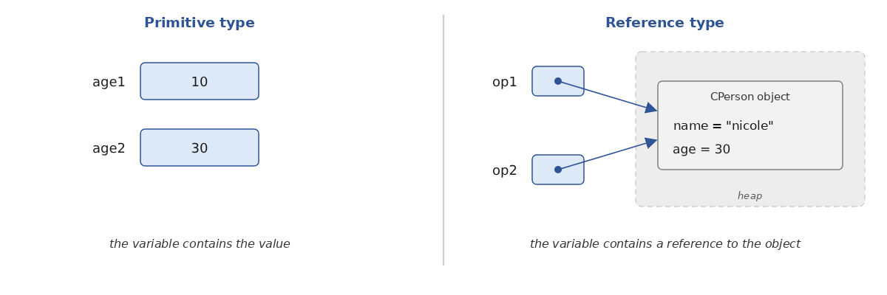

4. Clases, records, interfaces
4.1. Los objetos a través de ejemplos
4.1.1. Descripción general
Ahora exploraremos la programación orientada a objetos mediante ejemplos. Un objeto es una entidad que contiene datos que definen su estado (denominados campos, atributos, etc.) y funciones (denominadas métodos). Un objeto se crea a partir de una plantilla llamada clase. Por ejemplo, una clase llamada [C1] declara dos campos, [Type1 p1;] y [Type2 p2;], y dos métodos, [Type3 m3(...) { ... }] y [Type4 m4(...) { ... }], todo ello encerrado entre las llaves de la declaración [public class C1 { ... }].
A partir de la clase [C1], se pueden crear muchos objetos como [o1], [o2], … Todos tendrán los campos [p1], [p2], … y los métodos [m3], [m4], … Sin embargo, tendrán valores diferentes en sus campos [pi], de modo que cada uno tiene su propio estado. Si [o1] es un objeto de tipo [C1], [o1.p1] designa el campo [p1] de [o1], y [o1.m3(...)] designa la llamada al método [m3] de [o1].
Consideremos un primer modelo de objetos: la clase [Person].
4.1.2. Un programa formado por varios archivos
En los ejemplos del capítulo anterior, un programa cabía en un único archivo fuente. A partir de ahora, un programa puede constar de varios archivos fuente: una clase por archivo, más el programa principal. En Java, una clase pública debe colocarse en un archivo que lleve su nombre: la clase pública [Person] está en el archivo [Person.java]. Guardamos los archivos de un mismo programa en una carpeta; en este caso, la carpeta [Persons] dentro de la carpeta [04-classes]:
A partir de Java 22, el lanzador de código fuente, que ya usamos en el capítulo anterior, puede ejecutar un programa formado por varios archivos: el comando [java Main.java], ingresado en la carpeta [Persons], compila en memoria el archivo [Main.java] y, a demanda, los demás archivos de la carpeta que necesita (en este caso, [Person.java]) y ejecuta el programa. No se escribe ningún archivo compilado en el disco. También se pueden compilar los archivos de forma explícita con el compilador [javac], que escribe un archivo [.class] (código intermedio, o "bytecode") por clase, y luego ejecutar el programa con el comando [java], indicando dónde encontrar las clases compiladas (opción [-cp], el "classpath"):
El lanzador de varios archivos es suficiente para los programas de este capítulo, que solo utilizan las clases del JDK. Cuando un programa requiere bibliotecas externas, usaremos un proyecto Maven, como se presentó en el capítulo 2: Maven descarga las bibliotecas, compila el proyecto y lo ejecuta. Los archivos de este capítulo se pueden abrir tal cual en IntelliJ, IDEA o VS Code.
4.1.3. Definición de la clase Person
La definición de la clase [Person] en el archivo fuente [Person.java] será la siguiente:
- Línea 1: la clase es pública ([public]): puede ser utilizada por todas las demás clases. No pertenece a ningún paquete o, más precisamente, pertenece al paquete sin nombre; los paquetes se tratan al final del capítulo;
- Líneas 3–5: los tres campos de la clase. Las dos cadenas se inicializan con la cadena vacía: de lo contrario, valdrían [null] cuando se crea el objeto (un campo de objeto no inicializado vale [null], un campo numérico vale 0 y un campo booleano vale [false]);
- líneas 8–12: un método que establece el estado del objeto;
- líneas 15–17: un método que muestra el estado del objeto. [IO] es la clase de E/S de consola de Java 25 que usamos en el capítulo anterior.
Aquí tenemos la definición de una clase, es decir, de un tipo de datos. Cuando creamos variables de este tipo, las llamamos objetos o instancias de la clase. Una clase es, por lo tanto, una plantilla a partir de la cual se construyen objetos. Por convención, el nombre de una clase comienza con mayúscula ([Person]), mientras que el nombre de un campo o de un método comienza con minúscula ([firstName], [initialize]).
Los miembros de una clase pueden ser datos (campos) o métodos (funciones). Estos miembros pueden ir acompañados de una de las siguientes palabras clave:
Palabra clave | Acceso |
[private] | Un miembro privado solo es accesible por los métodos internos de la clase |
(ninguna) | Si no se especifica ninguna palabra clave, el miembro es accesible por cualquier método de una clase del mismo paquete. Este es el acceso predeterminado, conocido como "acceso de paquete" |
[protected] | Un miembro protegido es accesible por los métodos de las clases del mismo paquete y por los métodos de las clases derivadas (véase más adelante el concepto de herencia) |
[public] | Un miembro público es accesible por cualquier método, esté o no definido dentro de la clase |
En general, los datos de una clase se declaran privados, mientras que sus métodos se declaran públicos. Esto significa que el usuario de un objeto (el programador):
- no tendrá acceso directo a los datos privados del objeto;
- puede llamar a los métodos públicos del objeto, incluidos los que dan acceso a sus datos privados.
El orden en que se declaran los miembros [private], [protected] y [public] es arbitrario. Observe que el acceso predeterminado no es privado: un campo declarado sin palabra clave es visible para todas las clases del paquete. Por lo tanto, hay que recordar escribir [private].
4.1.4. El método initialize
¿Cuál es la función del método [initialize]? Como [lastName], [firstName], y [age] son miembros privados de la clase [Person], una instrucción como [p1.firstName = "Jean";], escrita en el programa principal, no es válida. El compilador la rechaza:
El mensaje del compilador está en inglés: el JDK no tiene traducción al francés de sus mensajes. Indica el archivo y el número de línea del error, y luego lo señala con un acento circunflejo. Necesitamos inicializar un objeto de tipo [Person] mediante un método público. Esta es la función del método [initialize]. Escribiremos [p1.initialize("Jean", "Dupont", 30);]. Esta sintaxis es válida porque [initialize] es de acceso público.
4.1.5. El operador new
Sin embargo, todavía falta algo. La declaración [Person p1;] declara [p1] como una referencia a un objeto de tipo [Person]. Este objeto todavía no existe y, por lo tanto, [p1] no está inicializada. Cuando escribimos a continuación [p1.initialize("Jean", "Dupont", 30);], llamamos al método [initialize] del objeto referenciado por [p1]. Sin embargo, este objeto no existe y el compilador informa del error: a la variable local [p1] no se le ha asignado un valor.
Si escribimos [Person p1 = null;] seguido de [p1.initialize("Jean", "Dupont", 30);], indicamos explícitamente con la palabra clave [null] que la variable [p1] todavía no hace referencia a ningún objeto. El compilador acepta el programa, pero en tiempo de ejecución la llamada al método provoca una excepción [NullPointerException]:
A partir de Java 14, el mensaje de la excepción especifica qué operación falló; [<local1>] designa la variable local [p1], cuyo nombre no se conservó en la compilación en memoria. Para que [p1] haga referencia a un objeto, hay que escribir [Person p1 = new Person();].
Esto crea un objeto de tipo [Person] que aún no ha sido inicializado: sus campos tienen sus valores predeterminados; en este caso, la cadena vacía para [lastName] y [firstName], y 0 para [age]. Ahora que [p1] hace referencia a un objeto, la instrucción de inicialización de este objeto, [p1.initialize("Jean", "Dupont", 30);], es válida.
4.1.6. La palabra clave this
Veamos el código del método [initialize]:
La instrucción [this.firstName = p;] significa que al campo [firstName] del objeto actual ([this]) se le asigna el valor [p]. La palabra clave [this] hace referencia al objeto actual: aquel sobre el que se ejecuta el método. ¿Cómo lo sabemos? Veamos cómo se inicializa el objeto referenciado por [p1] en el programa que llama: [p1.initialize("Jean", "Dupont", 30);]. Se llama al método [initialize] del objeto [p1] . Cuando, dentro de este método, se hace referencia al objeto [this], en realidad se hace referencia al objeto [p1].
Cuando un método de un objeto hace referencia a un campo [a] de ese objeto, la notación [this.a] está implícita: el método [initialize] podría haber escrito [firstName = p;] y [lastName = n;]. Hay que usar [this] de forma explícita cuando hay un conflicto de identificadores. Es el caso de la instrucción [this.age = age;] (línea 11), donde [age] designa a la vez un campo del objeto actual y el parámetro [age] recibido por el método. En el método, el nombre [age] por sí solo designa el parámetro; el campo debe designarse como [this.age].
4.1.7. Un programa de prueba
Este es un breve programa de prueba. Está escrito en el archivo fuente [Main.java]:
- Línea 2: el método [main] es el punto de entrada del programa. Como en el capítulo anterior, está escrito sin una clase envolvente: el archivo [Main.java] es un archivo fuente compacto (véase el párrafo siguiente);
- línea 4: creación de un objeto [Person] referenciado por [p1]. Como la clase [Person] pertenece al mismo paquete (el paquete sin nombre), se reconoce sin una instrucción import;
- Línea 5: inicialización del objeto;
- línea 6: visualización de su estado.
Resultados:
4.1.8. Archivos fuente compactos
Para un ejemplo breve, una carpeta que contiene varios archivos resulta innecesariamente pesada. Como en el capítulo anterior, escribiremos por lo tanto un archivo fuente compacto (Java 25): un archivo que contiene el método [void main()], posiblemente otros métodos y campos, y las clases que necesita el programa. Lo ejecutamos con el lanzador de código fuente: [java Classes01.java].
Es importante comprender cómo procesa el compilador un archivo de este tipo. Lo envuelve en una clase implícita, que lleva el nombre del archivo ([Classes01]): los métodos y campos del archivo pasan a ser miembros de esta clase, y las clases declaradas en el archivo se convierten en clases anidadas de esta clase implícita. La compilación explícita del archivo lo demuestra:
Por lo tanto, el nombre completo de la clase [Person] en el archivo [Classes01.java] es [Classes01$Person]. Esto tiene dos consecuencias que encontraremos en los ejemplos:
- una clase y las clases que contiene comparten sus miembros privados: el método [main] de un archivo compacto tiene acceso a los campos privados de las clases de ese archivo. Para asegurar que un campo privado sea inaccesible desde fuera de su clase, hay que colocar la clase en su propio archivo, como en la carpeta [Persons];
- Una clase anidada normal es una clase interna: sus objetos están vinculados a un objeto de la clase envolvente. Esto no se nota mientras los objetos los crean métodos del archivo, pero un método estático (véase la sección sobre los miembros de clase) no puede crearlos. Entonces declaramos la clase anidada [static]. Los records y las interfaces, que se tratan más adelante, son siempre estáticos.
Por último, un archivo compacto importa automáticamente todas las clases públicas del módulo [java.base]: [List], [ArrayList], [BigDecimal], [Objects]… pueden usarse allí sin la cláusula [import]. Este no es el caso de un archivo normal como [Person.java], como veremos.
4.1.9. Otro método initialize: la sobrecarga
Sigamos considerando la clase [Person] y agreguémosle un segundo método: [initialize]. El programa [Classes01.java] es el siguiente:
- líneas 2–9: el programa principal;
- línea 12: la clase [Person] se declara después del método [main]. No es pública: en un archivo compacto, esto es innecesario;
- líneas 19–23: el método [initialize] del párrafo anterior;
- líneas 26–30: un segundo método, [initialize].
Ahora tenemos dos métodos llamados [initialize]: esto es válido siempre que acepten parámetros diferentes (en número o tipo). Se dice que el método [initialize] está sobrecargado. El compilador elige qué método llamar según los parámetros reales: [p1.initialize("Jean", "Dupont", 30)] (línea 4) llama al primero, y [p2.initialize(p1)] (línea 7) llama al segundo. El tipo de retorno por sí solo no basta para distinguir dos métodos: dos métodos con el mismo nombre y los mismos parámetros que solo difieran en su tipo de retorno serían rechazados.
El parámetro del segundo método es una referencia ([p]) a una persona. Los campos de la persona ([p]) se asignan entonces al objeto actual ([this]). Observe que el método [initialize] tiene acceso directo a los campos del objeto [p] aunque sean privados (líneas 27–29). Esto siempre es así: un método de una clase [C] tiene acceso a los miembros privados de todos los objetos de la misma clase [C].
Resultados:
4.1.10. Constructores de la clase Person
Un constructor es un método que lleva el nombre de la clase y se llama cuando se crea el objeto. Generalmente sirve para inicializar el objeto. Es un método que puede aceptar parámetros pero no devuelve ningún valor. Su declaración no va precedida de ningún tipo (ni siquiera [void]).
Si una clase [C] tiene un constructor que acepta n parámetros, la declaración y la inicialización de un objeto de esta clase pueden hacerse en la forma [C object = new C(arg1, arg2, ... argn);], o en dos pasos: [C object;], seguido más adelante de [object = new C(arg1, arg2, ... argn);].
Cuando una clase [C] tiene uno o más constructores, se debe usar uno de ellos para crear un objeto de esa clase. Si una clase [C] no tiene constructores, dispone de un constructor predeterminado sin parámetros que no hace nada. Los campos del objeto conservan entonces sus valores iniciales. Esto es lo que ocurría en los programas anteriores, donde habíamos escrito [new Person()].
El programa [Classes02.java] presenta tres constructores para la clase [Person]:
- líneas 18–22: el constructor "principal" inicializa los tres campos. Como sus parámetros tienen los mismos nombres que los campos, los campos se distinguen mediante [this];
- líneas 25–27: el constructor de copia. La instrucción [this(p.firstName, p.lastName, p.age);] llama al constructor de la misma clase que acepta tres parámetros: [String], [String] e [int]. A esto se le llama encadenamiento de constructores. De este modo, el código de inicialización se escribe una sola vez;
- líneas 30–32: el constructor sin parámetros, que también está encadenado al constructor principal. Como la clase ha declarado constructores, ya no tiene un constructor predeterminado: si se quiere poder escribir [new Person()], hay que declararlo;
- líneas 13–15: los campos ya no se inicializan en el momento de su declaración; todos los constructores, ya sea directamente o por encadenamiento, les asignan un valor.
La llamada [this(...)] a otro constructor solo puede hacerse dentro de un constructor. Hasta Java 24, debía ser la primera instrucción; desde Java 25, pueden precederla instrucciones que no usen el objeto que se está construyendo (para verificar o preparar parámetros, por ejemplo). También podríamos haber hecho que los constructores llamaran a un método como [initialize]; sin embargo, es preferible el encadenamiento: el código de inicialización está en un único lugar, y un constructor no debe llamar a un método que una clase derivada pueda sobrescribir (veremos por qué).
Resultados:
4.1.11. Referencias a objetos
Usamos la clase [Person] del programa anterior, omitiendo su constructor sin parámetros pero incluyendo el método [initialize(String, String, int)] del comienzo del capítulo. El programa de prueba pasa a ser el siguiente [Classes03.java]:
El método [IO.print] (líneas 5, 8, …) escribe su parámetro sin saltar a la línea siguiente. Resultados:
Cuando se declara la variable [p1] mediante [Person p1 = new Person("Jean", "Dupont", 30);] (línea 4), [p1] referencia al objeto [Person("Jean", "Dupont", 30)] pero no es el objeto en sí. En C, se denominaría un puntero, es decir, la dirección del objeto creado. Si luego escribimos [p1 = null;], no es el objeto [Person("Jean", "Dupont", 30)] el que se modifica; es la referencia [p1] la que cambia de valor. El objeto se "perderá" si ninguna otra variable lo referencia: la memoria que ocupa será reclamada más tarde por el recolector de basura de la máquina virtual de Java.
Cuando escribimos [Person p2 = p1;] (línea 7), inicializamos la referencia [p2]: "apunta" al mismo objeto (hace referencia al mismo objeto) que la referencia [p1]. Así, si se modifica el objeto "apuntado" (o referenciado) por [p1], también se modifica el objeto referenciado por [p2] (líneas 5–6 de los resultados).
Cuando se escribe [Person p3 = new Person(p1);] (línea 10), se crea un nuevo objeto [Person],. Este nuevo objeto será referenciado por [p3]. Si se modifica el objeto referenciado por [p1], no se modifica el referenciado por [p3] (línea 7 de los resultados).
Por último, en la línea 20, el operador [==], aplicado a dos referencias a objetos, indica si hacen referencia al mismo objeto: [p1] y [p2] hacen referencia al mismo objeto, mientras que [p1] y [p3] hacen referencia a dos objetos distintos, aunque tengan el mismo contenido (línea 8 de los resultados). Veremos más adelante cómo comparar el contenido de dos objetos mediante el método [equals].
4.1.12. Paso de referencias a objetos como parámetros
En el capítulo anterior vimos que Java pasa los parámetros de los métodos por valor: el método recibe una copia del valor del parámetro real. Veamos qué significa esto cuando el parámetro es una referencia a un objeto. Para ello, usaremos la clase [StringBuilder] del JDK. Un objeto [String] no se puede modificar: una operación como [s.toUpperCase()] devuelve un nuevo [String]. En cambio, un objeto [StringBuilder] es una cadena mutable: su método [append] agrega caracteres a la cadena sin crear un nuevo objeto.
El programa [Classes04.java] es el siguiente:
- línea 3: dos referencias, [sb0] y [sb1], a objetos de tipo [StringBuilder];
- línea 5: se pasan al método [changeStringBuilder], cuyo resultado (una tercera referencia) se asigna a [sb2];
- líneas 10–20: un método del archivo compacto, que tiene los parámetros formales [sbf0] y [sbf1]. Cuando el método comienza, [sbf0] y [sb0] son dos referencias distintas que apuntan al mismo objeto: la referencia [sb0] se copió en [sbf0] (las referencias se pasan por valor). Lo mismo se aplica a [sbf1] y [sb1].
Resultados:
Explicaciones:
- [sb0] y [sbf0] son dos referencias distintas al mismo objeto. Este objeto se modificó mediante [sbf0] (línea 13). Esta modificación es visible mediante [sb0] (línea 5 de los resultados);
- [sb1] y [sbf1] son dos referencias distintas al mismo objeto. [sbf1] recibe un nuevo valor en el método y ahora apunta a un nuevo objeto (línea 15). Esto no cambia el valor de [sb1], que sigue apuntando al objeto original, sin modificar;
- un método de Java no puede, por lo tanto, cambiar el valor de una variable del llamador. Para devolver un nuevo objeto al llamador, lo retorna como resultado (líneas 17 y 19). Cuando hay varios resultados, se agrupan en un objeto, como un record (véase más adelante).
Tenga presente que un método puede modificar el objeto referenciado por un parámetro, pero no la variable del llamador que contiene la referencia. A diferencia de otros lenguajes como C#, Java no admite el paso de parámetros por referencia.
4.1.13. Objetos temporales
En una expresión, se puede llamar explícitamente al constructor de un objeto: el objeto se crea, pero no hay ninguna variable que permita acceder a él posteriormente (para modificarlo, por ejemplo). Este objeto temporal se crea para evaluar la expresión y luego se descarta. El espacio de memoria que ocupaba será reclamado automáticamente más tarde por el recolector de basura, cuya función es reclamar el espacio de memoria ocupado por los objetos que ya no están referenciados por los datos del programa.
Consideremos el siguiente programa, [Classes05.java], en el que los constructores de la clase [Person] muestran un mensaje:
- Línea 3: el objeto
[Person("Jean", *"Dupont", 30)]* se construye y luego se pasa al constructor de copia, que construye un segundo objeto, cuyo método[identify]se llama. Ninguno de los dos objetos está referenciado por una variable.
Resultados:
Los resultados muestran la creación sucesiva de los dos objetos temporales.
4.1.14. Accesores y mutadores
Agregamos a la clase [Person] los métodos necesarios para leer o modificar el estado de los campos de los objetos en [Classes06.java]:
- líneas 23–33: los métodos de lectura, llamados getters;
- Líneas 36–46: los métodos de escritura, llamados "setters".
Resultados:
Los nombres de estos métodos siguen una convención establecida desde los primeros días de Java, a saber, "JavaBeans": el getter del campo [age] se llama [getAge], y su setter se llama [setAge]; el getter de un campo booleano llamado [active] se llama, en cambio, [isActive]. Muchas bibliotecas (como Jackson para JSON y Hibernate para bases de datos, que usaremos más adelante) se basan en esta convención para obtener los datos de un objeto. A diferencia de otros lenguajes como C#, Java no tiene "propiedades": acceder al estado de un objeto siempre implica métodos o, para los objetos inmutables, records, que veremos más adelante. Los entornos de desarrollo pueden generar getters y setters a partir de los campos (en IntelliJ y IDEA, en el menú "Code / Generate…").
4.1.15. Setters que validan los valores recibidos
La ventaja de los modificadores sobre los campos públicos es la posibilidad de controlar los valores asignados a los campos: un modificador puede verificar la validez del valor recibido y lanzar una excepción si no es válido. Consideremos el programa [Classes07.java]:
Los tres modificadores validan el valor recibido (líneas 60–62, 68–70, 76–78).
- Líneas 60–62: el método [isBlank] (Java 11) devuelve [true] si la cadena está vacía o consta únicamente de espacios. La prueba [firstName == null] se realiza primero: si [firstName] es igual a [null], el operador [||] no evalúa su segundo operando, lo que provocaría una excepción [NullPointerException]. La excepción lanzada es de tipo [IllegalArgumentException], la excepción que proporciona Java para señalar un parámetro no válido. Es una excepción no verificada: el método no necesita declararla con [throws];
- líneas 34–39: el constructor inicializa el objeto mediante los accesores en lugar de los campos. Esto le permite aprovechar las validaciones realizadas por los accesores, que se escriben en un solo lugar;
- líneas 58, 66, 74: los modificadores se declaran como [final]. Veremos con la herencia que una clase derivada puede sobrescribir los métodos de su clase padre; la palabra clave [final] lo impide. Sin ella, una clase derivada podría redefinir [setAge], y el constructor de [Person] llamaría a esta nueva versión incluso antes de que se haya ejecutado el constructor de la clase derivada. El compilador, con la opción [-Xlint:all], señala este riesgo (advertencia [this-escape]) para una clase pública escrita en su propio archivo;
- líneas 41–42: un constructor sin parámetros, que deja los campos en sus valores iniciales.
Resultados:
La línea 4 de los resultados muestra que la llamada a [p.setAge(-4)] (línea 8) fue rechazada por el modificador. Líneas 13–16: se crea una instancia con el constructor sin parámetros y luego se inicializa mediante sus setters. Líneas 19–21: el nombre que contiene un espacio es rechazado (línea 6 de los resultados).
A diferencia de otros lenguajes, Java no tiene un inicializador de objetos, una sintaxis que permitiría establecer varios campos dentro de la propia expresión [new]: en su lugar, como se muestra aquí, encadenamos las llamadas al constructor y a los setters, o escribimos un constructor que recibe todos los valores. Veremos otras dos soluciones: los modificadores "fluidos" y los records.
4.1.16. Campos final y parámetros obligatorios
A un campo declarado como [final] se le debe asignar un valor exactamente una vez, ya sea en la declaración o dentro de cada constructor, y no puede modificarse después. El compilador hace cumplir esta regla. Combinado con la ausencia de modificadores, esto permite crear datos de solo lectura. El programa [Classes08.java] demuestra varios casos:
- líneas 28 y 43–49: el nombre es a la vez de solo lectura y modificable; tiene un getter y un setter;
- líneas 30–31: el apellido y la ciudad son campos [final]. El constructor les asigna un valor (líneas 37 y 39), que no puede cambiarse después;
- línea 32 y líneas 56–58: la edad puede ser leída por cualquiera pero no tiene un setter público; solo pueden modificarla los métodos de la clase, como [growOlder] (líneas 70–72);
- líneas 65–67: el método [getIdentity] devuelve un valor calculado a partir de los campos. Para el usuario de la clase, es indistinguible de un accesor;
- líneas 11–13: tres instrucciones que el compilador rechaza, por las razones indicadas en los comentarios. Para la tercera, el mensaje del compilador es: [cannot assign a value to final variable city];
- Líneas 75–98: la clase [Contact] tiene un campo obligatorio (el correo electrónico) y uno opcional (el teléfono). El campo obligatorio se impone mediante el constructor: no se puede crear un objeto [Contact] sin una dirección de correo electrónico. El método [Objects.requireNonNull(value, message)] (línea 82) devuelve su primer parámetro si no es [null] y, en caso contrario, lanza una excepción [NullPointerException] con el mensaje especificado: una dirección de correo electrónico de la forma [null] es rechazada (líneas 18–23);
- líneas 87–89: el carácter opcional del número de teléfono se expresa mediante un segundo constructor, que proporciona un valor predeterminado. Java no tiene parámetros opcionales: sobrecargamos el constructor.
Observe que en un archivo compacto el método [main] tiene acceso a los campos privados de las clases del archivo: por eso los comentarios de las líneas 11–13 no se basan en el carácter privado de los campos, sino en la ausencia de un modificador y en la palabra clave [final].
Resultados:
4.1.17. Modificadores fluidos
Cuando un objeto tiene muchos campos opcionales, el número de constructores aumenta y las llamadas a modificadores se vuelven más largas. Una técnica común consiste en hacer que cada modificador devuelva el objeto actual ([this]): las llamadas pueden entonces encadenarse; se habla de métodos "fluidos". El programa [Classes09.java] lo ilustra:
- líneas 25–28: el modificador [setFirstName] verifica el valor recibido, lo asigna al campo y devuelve el objeto actual. Su tipo de retorno es, por lo tanto, [Person];
- línea 3: las llamadas se encadenan: [new Person()] devuelve una persona, sobre la que se llama a [setFirstName], que devuelve la misma persona, sobre la que se llama a [setLastName], y así sucesivamente. La sintaxis se parece a un inicializador de objetos;
- Líneas 49–54: las verificaciones del nombre y del apellido, que son idénticas, se factorizan en el método privado [check]. Se declara como [static] porque no utiliza ningún campo del objeto (los miembros estáticos se tratan en el párrafo siguiente). El método [strip] (Java 11) elimina los espacios iniciales y finales de la cadena.
Resultados:
El nombre "jean", proporcionado con espacios a ambos lados (línea 3), se almacenó sin ellos (línea 2 de los resultados). Los modificadores fluidos no siguen la convención JavaBeans, según la cual un modificador no devuelve nada ([void]): algunas bibliotecas no los reconocen. Para construir objetos complejos, también se utiliza el patrón de diseño "Builder": una clase auxiliar, dotada de métodos fluidos, recopila los valores y luego construye el objeto final, que puede ser inmutable.
4.1.18. Métodos y atributos de clase
Supongamos que queremos contar el número de objetos [Person] creados en una aplicación. Podríamos gestionar un contador nosotros mismos, pero corremos el riesgo de pasar por alto objetos temporales que se crean aquí y allá. Parece más seguro incluir una instrucción en los constructores de la clase [Person] que incremente un contador. Este contador no puede ser un campo ordinario, ya que cada objeto tiene sus propios campos: es un campo de la propia clase y no de una instancia particular de esa clase. Se declara con la palabra clave [static]: [private static long nbPersons;].
Para referirnos a él, escribimos [Person.nbPersons] para indicar que es un campo de la clase [Person] misma. Aquí hemos creado un campo privado al que no se puede acceder directamente desde fuera de la clase. Por lo tanto, creamos un accesor público para dar acceso al campo de clase [nbPersons]. Para obtener el valor de [nbPersons], este accesor no necesita un [Person] objeto específico; por eso también lo declaramos como *[static]. Desde el exterior, se llamará con la sintaxis [Person.getNbPersons()]. Aquí hay un ejemplo de [Classes10.java]*:
- línea 16: el campo de clase. Como cualquier campo numérico, se inicializa en 0;
- líneas 19–21: el accesor de clase;
- líneas 24–26: un método de clase. Se llama mediante el nombre de la clase: [Person.unknown()] (línea 8). Un método de clase no tiene objeto actual: la palabra clave [this] no tiene sentido allí, y solo puede usar directamente los miembros [static] de la clase. Un método estático que crea y devuelve un objeto de su propia clase, como este, se denomina fábrica estática;
- línea 38: el constructor principal incrementa el contador. Por lo tanto, el constructor de copia, que está encadenado al constructor principal, también lo incrementa;
- Línea 14: La clase [Person] se declara como [static]. Como se explicó en la sección sobre archivos compactos: una clase declarada en un archivo compacto es una clase anidada de la clase implícita. Sin la palabra clave [static], es una clase interna, en la que cada objeto está vinculado a un objeto de la clase envolvente; el método estático [unknown], que no tiene objeto actual, no podría crear uno, y el compilador informaría el error [non-static variable this cannot be referenced from a static context]. Una clase escrita en su propio archivo no presenta este problema.
Resultados:
El programa contó correctamente el objeto temporal creado en la línea 5. Hemos usado miembros de clase desde el principio: [IO.println], [Integer.parseInt], [Math.sqrt] son métodos [static], y [Math.PI] es un campo [static]. La clase [Math] contiene solo miembros estáticos: se declara como [final], y su único constructor es privado, lo que impide la creación de instancias. Esta es la forma en que Java escribe una clase de utilidades.
4.1.19. Un arreglo de personas
Un objeto es un dato como cualquier otro y, como tal, se pueden agrupar varios objetos en un arreglo [Classes11.java]:
- Línea 3: crea un arreglo de 3 elementos de tipo [Person]. Estos 3 elementos se inicializan aquí con el valor [null], es decir, no hacen referencia a ningún objeto. Técnicamente se habla de un “arreglo de objetos”, aunque en realidad es solo un arreglo de referencias a objetos. La creación del arreglo —que es en sí mismo un objeto (como lo indica [new])— no crea ningún objeto del mismo tipo que sus elementos; esto debe hacerse posteriormente;
- líneas 4–6: creación de los 3 objetos de tipo [Person];
- líneas 8–10: muestran el contenido del arreglo [friends].
Resultados:
4.1.20. Inferencia de tipos e inicialización de arreglos
El programa [Classes12.java] presenta dos construcciones que simplifican la creación de objetos y arreglos:
- Línea 4: Con la palabra clave [var] (Java 10), el tipo de la variable local se infiere de la expresión que la inicializa, en este caso [Person]. No obstante, la variable tiene tipo: [p1] es de tipo [Person] y solo puede hacer referencia a una persona. [var] solo puede usarse para variables locales inicializadas en la declaración, no para campos ni parámetros;
- líneas 10–15: un arreglo creado y llenado con una lista de valores entre llaves y separados por comas. El tamaño del arreglo es el número de valores. Se permite una coma final (línea 14): facilita agregar un elemento. Esta sintaxis solo se permite en la declaración del arreglo;
- línea 16: [var] dentro de un bucle [for];
- línea 20: fuera de una declaración de arreglo, un arreglo inicializado se crea especificando su tipo: [new Person[] { ... }]. Esto se denomina arreglo anónimo: no está referenciado por ninguna variable en el método [main];
- Líneas 24–28: Un método del archivo compacto que recibe un arreglo de personas.
Resultados:
4.2. La herencia a través de un ejemplo
4.2.1. Descripción general
Aquí presentamos el concepto de herencia. El propósito de la herencia es “personalizar” una clase existente para que satisfaga nuestras necesidades. Supongamos que queremos crear una clase [Teacher]: un profesor es un tipo específico de persona. Tiene atributos que otras personas no tienen: por ejemplo, la materia que enseña. Pero también tiene los atributos comunes a todas las personas: nombre, apellido y edad. Por lo tanto, un profesor es un miembro de pleno derecho de la clase [Person], pero tiene atributos adicionales. En lugar de crear una clase [Teacher] desde cero, preferimos construir a partir de la clase existente [Person] y adaptarla a las características específicas de los profesores. Esto es posible gracias al concepto de herencia.
Para indicar que la clase [Teacher] hereda de la clase [Person], escribimos [public class Teacher extends Person].
[Person] se denomina clase padre (o clase base, o superclase), y [Teacher] se denomina clase derivada (o clase hija, o subclase). Un objeto [Teacher] tiene todas las propiedades de un objeto [Person]: tiene los mismos campos y métodos. Estos campos y métodos de la clase padre no se repiten en la definición de la clase hija; simplemente se especifican los campos y métodos que agrega la clase hija. Una clase Java puede heredar de una sola clase padre.
Los ejemplos de este apartado son dos programas de varios archivos, ubicados en las carpetas [Inheritance1] e [Inheritance2] . En la carpeta [Inheritance1], la clase [Person] se define de la siguiente manera: [Person.java]:
- línea 3: el contador de personas del apartado anterior;
- líneas 11–17: el constructor inicializa el objeto mediante sus modificadores, incrementa el contador y muestra un mensaje de seguimiento;
- líneas 38–51: tres modificadores que validan sus valores. Las validaciones del nombre y del apellido, que son idénticas, se factorizan en el método de clase privado [check] (líneas 59–64). Los modificadores se declaran como [final] porque el constructor los llama (véase el programa [Classes07.java]);
- líneas 54–56: el método [identify] de los ejemplos anteriores se ha reemplazado por el método [getIdentity], que devuelve la identidad de la persona en lugar de mostrarla.
Creamos una clase llamada [Teacher] que hereda de la clase [Person]: [Teacher.java]:
La clase [Teacher] agrega a los campos y métodos de la clase [Person]:
- línea 1: la clase [Teacher] deriva de la clase [Person];
- línea 3: un campo [section], que es el número de la sección a la que pertenece el profesor dentro del cuerpo docente (aproximadamente una sección por materia);
- líneas 6–13: un constructor que sirve para inicializar todos los campos de un profesor;
- líneas 16–22: el getter y el setter del campo [section].
4.2.2. Creación de un objeto Teacher
Una clase hija no hereda los constructores de su clase padre. Debe definir sus propios constructores. El constructor de la clase [Teacher] es el siguiente:
El constructor recibe cuatro parámetros ([firstName], [lastName], [age], [section]) y pasa tres ([firstName], [lastName], [age]) a su clase padre —en este caso, la clase [Person]— mediante la instrucción [super(firstName, lastName, age);] (línea 3). Sabemos que esta clase tiene un constructor, [Person(String, String, int)], que se usará para crear una persona con los parámetros pasados. Una vez completada la construcción de la parte [Person], la construcción del objeto [Teacher] continúa ejecutando el resto del constructor (líneas 5–7).
En resumen, el constructor de una clase derivada:
- pasa a su clase padre, mediante [super(...)], los parámetros que la clase padre necesita para construirse;
- usa los demás parámetros para inicializar sus propios campos.
Podríamos haber optado por inicializar los campos [firstName], [lastName] y [age] directamente en el constructor de la clase [Teacher], con instrucciones como [this.firstName = firstName;]. Esto es imposible por dos razones. En primer lugar, los campos privados [firstName], [lastName] y [age] solo son accesibles para los métodos de la clase [Person]. Todos los demás objetos, incluidos los objetos de clases derivadas como en este caso, deben acceder a ellos a través de miembros públicos (o protegidos). Habría sido distinto si la clase [Person] hubiera declarado estos campos como protegidos (*[protected]*): entonces habría permitido que las clases derivadas accedieran a ellos directamente. Además, la parte [Person] del objeto debe construirse en todo caso mediante un constructor de la clase [Person]: si no hay una llamada a [super(...)], el compilador inserta una llamada a [super()]—el constructor sin parámetros de la clase padre. Sin embargo, la clase [Person] no tiene uno. Si se elimina la instrucción [super(firstName, lastName, age);], el compilador informa el siguiente error:
Por lo tanto, usar el constructor de la clase padre es la solución correcta y el enfoque estándar: al construir un objeto hijo, primero se llama al constructor del objeto padre y luego se completan las inicializaciones específicas del objeto hijo ([section] en nuestro ejemplo). Al igual que con [this(...)], solo pueden preceder a la llamada a [super(...)] las instrucciones que no usen el objeto en construcción (desde Java 25; antes, [super(...)] tenía que ser la primera instrucción).
4.2.3. Métodos heredados
La clase [Teacher] no define un método llamado [getIdentity]. La expresión [e.getIdentity()], donde [e] es un profesor, hace referencia por lo tanto al método [getIdentity] heredado de la clase [Person]: es público y, por herencia, se convierte en un método público de la clase [Teacher]. El programa de prueba [Main.java] de la carpeta [Inheritance1] es el siguiente:
- línea 3: crea un profesor;
- línea 5: muestra la identidad del profesor, obtenida mediante el método [getIdentity] heredado de la clase [Person];
- línea 7: el método [getSection], específico de la clase [Teacher];
- líneas 11–12: llamada al método [display] (líneas 20–22) con un profesor y luego con una persona. Volveremos sobre esto en el siguiente apartado;
- líneas 14–15: llamada al método [toString] para ambos objetos. También volveremos sobre esto.
Resultados:
Podemos ver que:
- un objeto [Person] (línea 2 de los resultados) se construyó antes que el objeto [Teacher] (línea 3);
- [e.getIdentity()] proporcionó la identidad de la parte [Person] del profesor, sin su sección (línea 4);
- el contador de personas también cuenta al profesor (línea 11): un profesor es una persona.
Para obtener la identidad completa de un profesor, la clase [Teacher] debe definir su propio método [getIdentity]. Esto es lo que hace la carpeta [Inheritance2].
4.2.4. Polimorfismo
Consideremos una jerarquía de clases: C0 ← C1 ← C2 ← … ← Cn, donde Ci ← Cj indica que la clase Cj deriva de la clase Ci. Esto implica que la clase Cj tiene todas las características de la clase Ci más otras adicionales. Sean Oi objetos de tipo Ci. Es válido escribir [Oi = Oj] con j > i. En efecto, por herencia, la clase Cj tiene todas las características de la clase Ci más otras adicionales. Por lo tanto, un objeto Oj de tipo Cj contiene un objeto de tipo Ci. La operación [Oi = Oj] hace que la variable Oi, de tipo Ci, haga referencia al objeto Oj: a través de ella solo se puede acceder a los miembros definidos en la clase Ci.
El hecho de que una variable Oi de clase Ci pueda hacer referencia no solo a un objeto de clase Ci sino a cualquier objeto derivado de la clase Ci se denomina polimorfismo: la capacidad de una variable de hacer referencia a diferentes tipos de objetos.
Veamos un ejemplo y consideremos el método [display] del programa anterior:
Podemos pasarle un [Person] o un [Teacher]: En este último caso, el parámetro formal [p], que es de tipo [Person], recibe un valor de tipo [Teacher]. Dado que el tipo [Teacher] deriva del tipo [Person], esto es válido. La instrucción [p.getIdentity()] ejecutó aquí el método [getIdentity] de la clase [Person], el único que existe en el programa: para el profesor (línea 7 de los resultados), solo obtenemos la identidad de su parte “Person”. Veamos qué sucede cuando la clase [Teacher] tiene su propio método [getIdentity].
4.2.5. Redefinición de métodos y enlace dinámico
En la carpeta [Inheritance2], la clase [Person] es la misma que la de la carpeta [Inheritance1] con una adición:
- líneas 6–10: una redefinición del método [toString], que se trata en el apartado siguiente.
En la clase [Teacher], el método [getIdentity] se redefine de la siguiente manera:
- Líneas 23–26: El método [getIdentity] redefine el de la clase padre; tiene el mismo nombre, los mismos parámetros y el mismo tipo de retorno. Se apoya en el método [getIdentity] de su clase padre, al que se hace referencia como [super.getIdentity()], para recuperar la parte “Person”, y luego lo complementa con la sección específica de la clase [Teacher];
- Línea 23: La anotación [@Override] le indica al compilador que el método pretende redefinir un método de la clase padre. No es obligatoria, pero se recomienda enfáticamente: si el método no redefiniera nada (por un error tipográfico en el nombre o por parámetros diferentes), el compilador informaría el error en lugar de crear silenciosamente un método nuevo;
- Línea 2: La clase es final ([final]), lo que explicaremos con más detalle más adelante.
Consideremos un objeto profesor [E]. Este objeto contiene en su interior un objeto [Person]:

El método [getIdentity] está definido tanto en la clase [Teacher] como en su clase padre [Person]. En Java, todos los métodos de instancia que no son privados ni finales pueden redefinirse, y la elección del método que ejecuta [p.getIdentity()] se hace en tiempo de ejecución, según el tipo real del objeto al que hace referencia [p], y no en tiempo de compilación según el tipo declarado de la variable. Esto se conoce como enlace dinámico. Para ejecutar [o.m()], la máquina virtual busca un método llamado [m] en el siguiente orden:
- en la clase del objeto [o];
- en su clase padre, si la tiene;
- en la clase padre de su clase padre, si existe;
- y así sucesivamente.
Por lo tanto, la herencia permite redefinir en la clase hija métodos que tienen la misma firma que los de la clase padre. Esto es lo que permite adaptar la clase hija a sus propias necesidades. El programa [Main.java] de la carpeta [Inheritance2] es el siguiente:
Resultados:
Esta vez, en la línea 4 de los resultados, el método [display] mostró correctamente el nombre completo del profesor. Las líneas 9–11 del programa muestran que, ya sea visto a través de una variable de tipo [Person] o convertido a [Person] mediante el operador [(Person)], el profesor sigue siendo un profesor: sigue siendo el método [getIdentity] de la clase [Teacher] el que se ejecuta (líneas 7–8 de los resultados). La conversión cambia el tipo de la referencia, no el del objeto. A diferencia de otros lenguajes como C#, donde un método solo puede redefinirse si se declara virtual, los métodos de Java son “virtuales” por defecto; no existe tal cosa como la redefinición de un método de instancia.
4.2.6. La clase Object y el método toString
La clase [java.lang.Object] es la clase “padre” de todas las clases de Java. Así, cuando se escribe [public class Person], se está escribiendo implícitamente [public class Person extends Object].
La clase [Object] define varios métodos que todos los objetos heredan:
- [String toString()]: devuelve una representación textual del objeto. Por defecto, es el nombre de la clase del objeto, seguido del carácter [@] y de un código hash escrito en hexadecimal;
- [boolean equals(Object o)]: indica si el objeto es “igual” al objeto [o]. Por defecto, solo es igual a sí mismo: el método compara referencias, como el operador [==];
- [int hashCode()]: devuelve un código hash del objeto, usado por los diccionarios y los conjuntos (véase el próximo capítulo). Los métodos [equals] y [hashCode] se tratan más adelante;
- [Class<?> getClass()]: devuelve la descripción de la clase real del objeto. El método [getSimpleName] de esta descripción devuelve el nombre de la clase, mientras que [getName] devuelve su nombre completo.
Es el método [toString] de la clase [Object] el que usaron las llamadas [e.toString()] y [p.toString()] en la carpeta [Inheritance1]: [Teacher@70325e14] y [Person@37ceb1df] (líneas 9–10 de los resultados; los números varían de una ejecución a otra). Aunque no redefinimos el método [toString] en las clases [Person] y [Teacher], el método [toString] de la clase [Object] pudo mostrar el nombre real de la clase del objeto.
En la carpeta [Inheritance2], la clase [Person] redefine el método [toString] (véase más arriba). Volvamos al programa [Main.java] de la carpeta [Inheritance2]:
Línea 2: El método [IO.println(Object)] acepta un parámetro de tipo [Object]; por lo tanto, dado que [Object] es la superclase de todas las clases, se puede pasar cualquier objeto —en este caso, un [Teacher]—. Imprime en la consola el resultado del método [toString] del objeto. Como el enlace es dinámico, se usa el método [toString] del objeto real —en este caso, el heredado de la clase [Person]. Este devuelve [getIdentity()], un método redefinido: para el profesor [e], se ejecuta por lo tanto el método [getIdentity] de la clase [Teacher], como se muestra en la línea 9 de los resultados. Por lo tanto, no es necesario redefinir [toString] en la clase [Teacher].
El mismo mecanismo se aplica a la concatenación de una cadena y un objeto: en [" : " + person] (línea 7), el objeto [person] se convierte en cadena mediante su método [toString]. El bucle de las líneas 6–8 recorre un arreglo de referencias [Person] que en realidad apuntan a objetos de tipos diferentes: [getClass().getSimpleName()] devuelve el nombre real de la clase de cada objeto (líneas 11–12 de los resultados).
4.2.7. Clases finales y clases selladas
La clase [Teacher] del paquete [Inheritance2] se declara como [public final class Teacher extends Person]. La palabra clave [final] impide derivar clases de la clase [Teacher]: la declaración [class TeacherResearcher extends Teacher] sería rechazada por el compilador. Una clase se marca como final cuando no está destinada a ser derivada. Hemos visto que la palabra clave también se aplica a los métodos: un método [final] no puede ser redefinido por las clases derivadas, sin que ello prohíba derivar de esa clase. Por ejemplo, la clase [String], derivada del JDK, es final.
Entre una clase abierta a todas las derivaciones y una clase final, Java 17 agregó una opción intermedia: la clase sellada ([sealed]), que proporciona una lista exhaustiva de sus clases derivadas directas. El programa [Classes13.java] lo ilustra:
- Línea 20: La clase abstracta (véase más adelante: no se pueden crear objetos de esta clase, solo de sus clases derivadas) [Person] es sellada. Solo las clases [Teacher], [Student], y [Adjunct], enumeradas después de la palabra clave [permits], pueden derivar de ella. Cuando las clases derivadas se declaran en el mismo archivo, como aquí, la cláusula [permits] puede omitirse: las clases autorizadas son entonces las del archivo que derivan directamente de ella. En un programa más grande, las clases autorizadas deben pertenecer al mismo paquete que la clase sellada (o al mismo módulo si la clase sellada pertenece a un módulo con nombre);
- línea 24: el constructor es protegido ([protected]): está destinado únicamente a las clases derivadas;
- Líneas 35 y 49: Una clase derivada de una clase sellada debe especificar cómo puede ser derivada a su vez. Las clases [Teacher] y [Student] son finales;
- línea 64: la clase [Adjunct] se declara como [non-sealed]: esto reabre la jerarquía y permite que cualquier clase derive de ella. Una tercera opción es declararla a su vez como [sealed], con su propia lista de clases permitidas;
- líneas 71–83: La clase [Consultant] deriva de [Adjunct], lo cual está permitido;
- líneas 85–86: una clase [Artist] derivada de [Person] sería rechazada;
- Líneas 13–16: La descripción de una clase ([Person.class]) indica si es sellada ([isSealed]) y enumera sus clases derivadas directas autorizadas ([getPermittedSubclasses]).
Resultados:
Si se quita el comentario de la clase [Artist] (dotándola de un constructor), el compilador informa:
¿Cuál es el propósito de una clase sellada? Permite que el autor de una jerarquía de clases mantenga el control sobre ella: el autor sabe que cualquier [Person] es un [Teacher], un [Student], o un [Adjunct]. El compilador también lo sabe y lo aprovecha en el filtrado por patrones, que se trata al final del capítulo: un [switch] que maneja los tres casos es completo. El mecanismo también se aplica a las interfaces ([sealed interface]), que se tratan más adelante.
4.3. Sin sobrecarga de operadores: equals, compareTo…
Algunos lenguajes, como C# o C++, permiten redefinir el significado de los operadores ([+], [==], [<]…) para una clase. Java no lo permite: los operadores siempre tienen el significado que les asigna el lenguaje. La única excepción es el operador [+] aplicado a una cadena, que realiza una concatenación y para ello usa el método [toString] del objeto concatenado. En lugar de operadores, escribimos métodos que siguen convenciones bien establecidas:
Operación | Método de Java | Ejemplo |
Igualdad de contenido ([==] compara referencias) | [boolean equals(Object o)], heredado de [Object] | [s1.equals(s2)] |
Comparación ([<], [>]…) | [int compareTo(T other)] de la interfaz [Comparable<T>]: resultado negativo, nulo o positivo | [s1.compareTo(s2) < 0] |
operaciones aritméticas | métodos con nombre explícito | [a.add(b)], [a.multiply(b)] para [BigDecimal] |
Adición a una colección ([+=]) | [add] | [list.add(p)] |
4.3.1. Un ejemplo
La carpeta [Lists] contiene una clase [ListOfPersons], una lista de personas, cuyos métodos actúan como los operadores [+] y [+=]. Las clases [Person] y [Teacher] de esta carpeta son versiones simplificadas de las de la carpeta [Inheritance2]: los campos son [final] y no tienen modificadores; ya no hay mensajes de seguimiento ni contadores. Las personas se organizan en una lista genérica [List<Person>] (las clases genéricas se tratan más adelante en este capítulo; las listas se tratan en el próximo capítulo). En lugar de hacer que la clase [ListOfPersons] herede de una clase de lista derivada del JDK, colocamos la lista en un campo privado de la clase. Esto se conoce como usar composición en lugar de herencia: de este modo, la clase [ListOfPersons] expone solo las operaciones que ha elegido. De la interfaz [List<Person>], usamos únicamente los siguientes elementos:
- el método [l.add(p)], que agrega la persona [p] a la lista [l], y el método [l.addAll(l2)], que le agrega todos los elementos de la lista [l2];
- el método [l.size()], que devuelve el número de elementos de la lista [l];
- los métodos [l.get(i)] y [l.set(i, p)], que leen y modifican el elemento número i de la lista [l].
La definición de la clase [ListOfPersons] es la siguiente: [ListOfPersons.java]:
- líneas 1–3: A diferencia del archivo compacto [Main.java], un archivo normal no importa automáticamente las clases del módulo [java.base]: debe importar las que usa (excepto las del paquete [java.lang], como [String], que siempre son conocidas). Las cláusulas [import] se proporcionan con los paquetes;
- línea 7: la lista de personas. La palabra clave [final] indica que el campo siempre hará referencia a la misma lista; el contenido de la lista sí puede cambiar. [new ArrayList<>()] crea una lista vacía; el operador “diamante” [<>] permite que el compilador infiera el tipo de los elementos, [Person], a partir del tipo del campo;
- líneas 10–12: el número de personas;
- líneas 16–21: el método [plus] actúa como un operador [+] para la operación [l.plus(p)], donde [l] es de tipo [ListOfPersons] y [p] es de tipo [Person] o un derivado de este. Crea una nueva lista (línea 17), copia en ella las personas de la lista actual (línea 18) y luego agrega la persona [p] (línea 19). Al igual que con el operador [+] para números o cadenas, los operandos no se modifican. Dado que la lista [result] es de la misma clase, el método tiene acceso a su campo privado [result.persons]. La lista devuelta es de tipo [ListOfPersons], lo que permite llamadas encadenadas como en [l.plus(p1).plus(p2)];
- líneas 24–27: el método [add] actúa como un operador [+=]: modifica la lista actual agregándole la persona [p] y devuelve esa misma lista, lo que también permite llamadas encadenadas;
- Líneas 49–56: Redefinimos el método [toString] para mostrar una lista de personas con la forma (persona1, persona2, ...), donde personai es a su vez el resultado del método [toString] de la persona. Un objeto [StringJoiner] (línea 51) construye una cadena a partir de elementos sucesivos ([add], línea 53), separándolos con el separador especificado (en este caso, una coma) y encerrándolos con un prefijo y un sufijo (en este caso, paréntesis).
Observe que la clase [ListOfPersons] no tiene constructor. Por lo tanto, usa el constructor por defecto, que no recibe parámetros y no hace más que inicializar el campo [persons] con el valor especificado en su declaración. Las líneas 29–46 se tratan en la sección siguiente.
El programa de prueba [Main.java] comienza así:
- Líneas 3–5: dos cadenas con el mismo contenido pero distintas: la cadena [s2] se construye en tiempo de ejecución. El operador [==] compara las referencias, mientras que el método [equals] compara los contenidos. Para comparar dos cadenas, siempre se debe usar [equals];
- línea 6: el método [compareTo] devuelve un número negativo porque “jean” va antes que “paul” en el orden de los códigos de caracteres;
- Líneas 7–8: La clase [BigDecimal] (números decimales exactos, que usaremos para los montos) reemplaza los operadores [+] y [<] por los métodos [add] y [compareTo];
- línea 12: creación de una lista vacía de personas [l];
- línea 14: se agregan dos personas mediante el método [plus];
- línea 18: [l.plus(p)] crea una nueva lista, [l2]; la lista [l] permanece sin cambios;
- línea 25: agrega un profesor mediante el método [add];
- líneas 16–20: la concatenación de una cadena y un objeto usa el método [toString], que está redefinido en la clase [ListOfPersons].
Resultados (inicio):
¿Por qué hay dos métodos, si [l = l.plus(p)] produce el mismo resultado que [l.add(p)]? El método [plus] crea una nueva lista, copia en ella todas las personas de [l] y luego [l] hace referencia a esta nueva lista, mientras que la antigua es descartada por el recolector de basura. El método [add] agrega la persona a la lista existente sin copiarla. La línea 23 almacena una segunda referencia, [l3], a la lista [l]; tras la llamada a [l.add(...)], ambas referencias siguen apuntando al mismo objeto (línea 9 de los resultados), lo que prueba que la lista no se volvió a crear. Para una lista grande, o dentro de un bucle, la diferencia de rendimiento es significativa. La elección entre los dos estilos es evidente en el JDK: los objetos inmutables [String] y [BigDecimal] devuelven objetos nuevos; las listas y [StringBuilder] se modifican.
4.4. Sin indexadores: métodos get y set
Aquí seguimos usando la clase [ListOfPersons]. Si [l] es un objeto [ListOfPersons], queremos poder referirnos a la persona que está en el índice i de la lista [l] tanto para leerla como para escribirla. Algunos lenguajes permiten definir un “indexador” para este fin, que permite usar la notación [l[i]] sobre un objeto. Java no lo permite: la notación [[i]] está reservada para los arreglos. Por convención, escribimos los métodos [get(int i)] y [set(int i, value)], tal como lo hacen las listas del JDK:
- líneas 2–4: el método [get] devuelve la persona número i de la lista privada [persons];
- líneas 6–8: el método [set] le asigna la persona [p];
- líneas 11–18: También queremos poder obtener la posición en la lista de la persona con un nombre dado, o -1 si esa persona no está en la lista. El nombre [indexOf] es el del método equivalente de las listas y las cadenas del JDK. Los nombres se comparan mediante [equals] (línea 13).
El programa de prueba continúa así:
- línea 3: llamada al método [set];
- línea 5: llamada al método [get];
- línea 11: llamada al método [indexOf];
- línea 13: llamada al método [get].
Resultados (final):
4.5. Sin estructuras: tipos primitivos y registros
4.5.1. Valor y referencia
Otros lenguajes, como C o C#, ofrecen estructuras además de clases: tipos cuyas variables contienen directamente los datos, en lugar de una referencia a un objeto. Java no las tiene. Distingue dos familias de tipos:
- los ocho tipos primitivos ([byte], [short], [int], [long], [float], [double], [char], [boolean]): una variable de un tipo primitivo contiene el valor mismo;
- los tipos de referencia: clases (incluida [String]), interfaces, arreglos, registros, etc. Una variable de un tipo de referencia contiene una referencia a un objeto, como [null].
El programa [Classes14.java] ilustra la diferencia:
- Líneas 37–40: una clase con dos campos accesibles desde el paquete: [name], [age]. Los campos no privados —que en general se desaconsejan— facilitan aquí la lectura del ejemplo.
Resultados:
La declaración [int age1 = 10;] (línea 4) reserva una ubicación de memoria que contiene el entero 10: el valor de [age1] es el entero mismo. En el caso de la clase, el objeto ([name], [age]) se crea explícitamente mediante el operador [new] (línea 13). El objeto se coloca en un área de memoria administrada por el recolector de basura, el heap, y el valor de [op1] es la dirección (la referencia) de este objeto.
Cuando se escribe [int age2 = age1;] en el programa (línea 5), el valor de [age1] —el entero 10— se copia en [age2]: es una copia de valor. Modificar [age2] no modifica [age1] (línea 3 de los resultados). Consideremos ahora la instrucción [CPerson op2 = op1;] (línea 18). El valor de [op1] se copia en [op2], pero como este valor es la dirección del objeto, el objeto en sí no se duplica: [op1] y [op2] hacen referencia al mismo objeto. Si se modifica el objeto al que apunta [op2], también se modifica el objeto al que apunta [op1] , ya que son el mismo (líneas 6–7 de los resultados). Para obtener un segundo objeto, hay que crearlo y copiar en él los campos del primero (líneas 28–30): modificar la copia no modifica el original (líneas 8–9 de los resultados).

De estas explicaciones podemos concluir que:
- el valor de una variable de un tipo primitivo es el dato mismo;
- el valor de una variable de tipo de referencia es la dirección del objeto al que apunta;
- la asignación y el paso de parámetros siempre copian el valor de la variable: el dato mismo en el caso de un tipo primitivo, la referencia en el caso de un objeto.
Cada tipo primitivo corresponde a una clase denominada “envoltorio” (wrapper) en el paquete [java.lang]: [Integer] para [int], [Double] para [double], [Boolean] para [boolean], y así sucesivamente. El compilador convierte automáticamente un valor primitivo en un objeto envoltorio y viceversa (“autoboxing” y “unboxing”): lo necesitaremos con los genéricos, que solo aceptan tipos de referencia. Una variable [Integer] puede ser igual a [null], pero una variable [int] nunca puede serlo.
Para representar un pequeño dato compuesto (un punto, un color, una fecha, un monto) que se trata como un valor, Java usa clases inmutables: sus objetos no pueden modificarse después de creados. Compartir una referencia a un objeto inmutable es seguro: nadie puede modificarlo, y el objeto se comporta entonces como un valor. Dos herramientas completan este sistema: el método *[equals]*, que compara dos objetos según su contenido, y los registros, que declaran una clase inmutable en una sola línea. Este es el tema de los dos apartados siguientes.
4.5.2. Igualdad de dos objetos: equals y hashCode
Como hemos visto, el operador [==] aplicado a dos referencias indica si hacen referencia al mismo objeto, y el método [equals], heredado de [Object], hace lo mismo. Para que dos objetos distintos con el mismo contenido se consideren iguales, una clase debe redefinir el método [equals] y, necesariamente junto con él, el método [hashCode]. El programa [Classes15.java] lo demuestra:
- líneas 32–44: El método [equals] redefine el de la clase [Object]. Su parámetro es de tipo [Object]: una persona puede compararse con cualquier objeto. El método sigue un patrón estándar:
- líneas 35–37: un objeto es igual a sí mismo;
- líneas 39–41: la expresión [o instanceof Person other] (Java 16) es verdadera si [o] hace referencia a un objeto de tipo [Person] (o de una clase derivada), y falsa en caso contrario, en particular si [o] es igual a [null]. Cuando es verdadera, la variable [other], de tipo [Person], hace referencia al objeto [o]: pueden usarse sus campos. Este “patrón de tipo” se explica en detalle al final del capítulo;
- línea 43: se comparan los campos. El método [Objects.equals(a, b)] compara dos objetos con [equals] manejando el caso en que uno de ellos es [null];
- líneas 47–50: El método [hashCode] devuelve un entero calculado a partir de los mismos campos, en este caso mediante el método [Objects.hash]. La regla es obligatoria: dos objetos que son iguales en el sentido de [equals] deben tener el mismo código hash. Los diccionarios y conjuntos del JDK (próximo capítulo) clasifican los objetos según este código y dejarían de funcionar si no se respetara la regla;
- líneas 12–17: Un conjunto [HashSet] nunca contiene dos objetos iguales: agregar [p2], que es igual a [p1], no tiene efecto, y la búsqueda de una nueva persona ([paul, 10]) tiene éxito.
Resultados:
Escribir [equals] y [hashCode] a mano es tedioso y propenso a errores; los entornos de desarrollo pueden generarlos. Los registros, en cambio, los proporcionan automáticamente.
4.5.3. Objetos inmutables
El programa [Classes16.java] demuestra dos formas de definir datos inmutables:
- líneas 19–45: una clase inmutable escrita manualmente. Es final, para que ninguna clase derivada pueda agregarle un estado mutable; sus campos son privados y [final]; no tiene modificadores. Para “mover” un punto, el método [move] devuelve un nuevo punto (líneas 37–39);
- Línea 48: un registro (Java 16). El encabezado [record Color(int r, int g, int b)] declara una clase final con tres campos privados —[final], conocidos como los componentes del registro—, un constructor de tres parámetros y tres accesores: [r()], [g()], [b()], y los métodos [toString], [equals] y [hashCode], todos los cuales usan los componentes;
- Líneas 50–56: Se pueden agregar métodos a un registro. Como un registro es inmutable, no puede modificarse: en su lugar, se crea una copia en la que se ha cambiado un componente. Estos métodos se denominan “withers” (del inglés “with”); otros lenguajes ofrecen una expresión para este fin, [with], que no existe en Java 25;
- línea 11: Un accesor de un componente se nombra como el componente, sin el prefijo [get];
- línea 12: dos registros con los mismos componentes son iguales en el sentido de [equals], aunque sean distintos;
- línea 14: los métodos “wither” se encadenan.
Resultados:
El método [toString] generado muestra el nombre del registro y sus componentes (línea 3 de los resultados). Observe aquí que un registro es la forma más concisa de declarar un pequeño dato inmutable: este es el tipo que usaremos para los tramos del impuesto en la aplicación de ejemplo de este capítulo. Los registros se tratan en detalle más adelante.
4.6. Interfaces
4.6.1. Un primer ejemplo
Una interfaz es un conjunto de declaraciones de métodos que forma un contrato. Una clase que decide implementar una interfaz se compromete a proporcionar una implementación de todos los métodos abstractos definidos en la interfaz. El compilador verifica esta implementación.
Por ejemplo, esta es la definición (simplificada) de la interfaz [java.util.Iterator<E>] del JDK, que permite recorrer los elementos de una colección: [public interface Iterator<E> { boolean hasNext(); E next(); }]. Los métodos de la interfaz se definen solo mediante sus firmas, seguidas de un punto y coma: no tienen código y son implícitamente públicos y abstractos. Son las clases que implementan la interfaz las que proporcionan el código de sus métodos. Una clase llamada [C] declara que implementa la interfaz mediante la palabra clave [implements]: [public class C implements Iterator<String>], y entonces debe definir los dos métodos públicos [public boolean hasNext() { ... }] y [public String next() { ... }].
Una convención habitual (aunque no universal; el JDK no la sigue) es comenzar el nombre de una interfaz con la letra I. Los ejemplos siguientes forman la carpeta [Statistics]. Consideremos la siguiente interfaz, [IStats.java]:
La interfaz [IStats] contiene:
- un método [average]: para calcular la media de una serie de valores;
- un método [standardDeviation]: para calcular la desviación estándar.
Observe que en ningún lugar se especifica a qué conjunto de valores se refiere. Podrían ser las notas promedio de una clase, las ventas mensuales promedio de un producto determinado, la temperatura promedio en un lugar dado… Este es el principio de las interfaces: se supone la existencia de métodos en el objeto, pero no la de datos específicos. Los métodos no tienen el prefijo [get]: son cálculos y no accesos a campos, y esta elección permitirá que un registro implemente la interfaz.
Una primera clase que implemente la interfaz [IStats] podría ser una clase que sirva para almacenar las notas de los estudiantes de una clase en una materia determinada. Un estudiante se caracteriza por el siguiente registro [Student], [Student.java]:
El estudiante se identifica por su nombre y apellido. El registro mostrado en el apartado anterior lo hace en una sola línea. Una nota se representa mediante el siguiente registro, [Grade], que sigue: [Grade.java]:
La nota se define por el estudiante evaluado y la nota en sí. El registro redefine el método [toString] generado por el compilador para mostrar una nota con la forma [firstName,lastName,value].
Las notas de todos los estudiantes en una materia determinada se agrupan en la siguiente clase [ArrayOfGrades]: [ArrayOfGrades.java]:
- Línea 3: La clase [ArrayOfGrades] implementa la interfaz [IStats]. Por lo tanto, debe implementar los métodos [average] y [standardDeviation]. Estos se implementan en las líneas 39–47. La anotación [@Override] también se usa para implementar un método de una interfaz;
- líneas 5–8: cuatro campos [final]: la materia para la cual el objeto almacena notas, el arreglo de notas, la media y la desviación estándar de las notas;
- líneas 11–27: el constructor. Aquí suponemos que las notas pasadas al constructor no cambiarán después. Por lo tanto, usamos el constructor para calcular de inmediato la media y la desviación estándar de estas notas y almacenarlas. Un campo [final], como [average], puede recibir un valor en el constructor (línea 20); no se le puede asignar un valor después. Las expresiones [condition ? value1 : value2] fijan en -1 la media y la desviación estándar de un arreglo vacío. [Math.pow(x, 2)] calcula x², y [Math.sqrt] calcula la raíz cuadrada;
- líneas 50–53: el método [toString] usa el método estático [Arrays.toString], que devuelve los elementos de un arreglo entre corchetes, separados por comas, cada uno convertido en cadena mediante su método [toString], en este caso, el del registro [Grade].
En la clase anterior, las notas se almacenaban en un arreglo. No era posible agregar una nueva nota después de crear el objeto [ArrayOfGrades]. Ahora proponemos una segunda implementación de la interfaz [IStats], llamada [ListOfGrades], en la que esta vez las notas se almacenan en una lista [List<Grade>], con la posibilidad de agregar notas después de la creación inicial del objeto [ListOfGrades]: [ListOfGrades.java]:
- línea 3: la clase [ListOfGrades] implementa la interfaz [IStats];
- línea 6: Las notas ahora se almacenan en una lista en lugar de un arreglo;
- líneas 27–32: Ahora se puede agregar una nota a las ya almacenadas. La media y la desviación estándar ya no se calculan en el constructor sino bajo demanda, dentro de los propios métodos de la interfaz: [average] (líneas 35–41) y [standardDeviation] (líneas 44–50). Una vez calculados, estos valores se almacenan para no recalcularlos en cada solicitud: se dice que se guardan en caché. Agregar una nota invalida la caché;
- líneas 8–9: la caché. El tipo [Double] es la clase envoltorio del tipo primitivo [double]: a diferencia de una variable [double], una variable [Double] puede tener el valor [null], que aquí significa “aún no calculado”. Los campos no inicializados se fijan en [null] cuando se construye el objeto;
- líneas 38 y 40: el compilador convierte automáticamente el [double] devuelto por [computeAverage] en el objeto [Double] (“autoboxing”), y el objeto [Double] en [double] para el valor de retorno del método (“unboxing”).
Un programa de prueba podría ser el siguiente [Main.java]:
- líneas 3–5: creación de un arreglo de estudiantes;
- línea 6: creación de un arreglo de notas;
- línea 8: un objeto [ArrayOfGrades] cuya media y desviación estándar se muestran en la línea 10;
- línea 12: un objeto [ListOfGrades], cuya media y desviación estándar se muestran en la línea 13. [List.of(grades)] devuelve una lista de solo lectura con los elementos del arreglo; el constructor de la clase [ArrayList] la convierte en una lista modificable a la que se pueden agregar notas;
- línea 15: se agrega una nueva nota, seguida de una actualización de la visualización;
- Líneas 25–27: El método
[displayStats]recibe como parámetro un tipo*[IStats], que es un tipo de interfaz. Esto significa que el parámetro real puede ser cualquier objeto que implemente la interfaz*[IStats]. Al usar un objeto de datos de un tipo de interfaz, solo se usan los métodos de la interfaz que implementa el objeto. Los demás se ignoran. Esta propiedad es similar al polimorfismo tratado para las clases. Si un conjunto de clases Ci que no están relacionadas entre sí por herencia (y que, por lo tanto, no pueden usar el polimorfismo basado en herencia) comparten un conjunto de métodos con la misma firma, puede ser útil agrupar estos métodos en una interfaz I que implementarían todas las clases en cuestión. Las instancias de estas clasesCipueden entonces usarse como parámetros reales de métodos que aceptan un parámetro formal de tipoI; es decir, métodos que usan solo los métodos de los objetosCidefinidos en la interfazI, y no los campos y métodos específicos de las diversas clasesCi; - líneas 18–21: Una variable puede ser del tipo de una interfaz. Puede entonces hacer referencia a cualquier objeto de una clase que implemente la interfaz. El compilador solo permite el acceso a los métodos de la interfaz (y a los de la clase [Object], como [toString]).
Resultados:
Concatenar un número ([double]) con una cadena usa el método [Double.toString], que siempre escribe el número con un punto decimal y al menos un decimal (16.0), independientemente de la configuración de idioma de la estación de trabajo. Para una presentación al estilo francés, use [String.format("%.2f", x)], como en el siguiente ejemplo.
Por último, observe que las interfaces pueden implementarse varias veces; es decir, se puede escribir [public class DerivedClass extends BaseClass implements I1, I2, ..., In], donde las Ij son interfaces: una clase hereda de una sola clase, pero puede implementar tantas interfaces como desee. Una interfaz puede a su vez extender una o varias interfaces: [interface I3 extends I1, I2].
4.6.2. Métodos default, estáticos y privados de las interfaces
Desde Java 8, una interfaz puede proporcionar una implementación por defecto para algunos de sus métodos, declarada con la palabra clave [default]. Una clase que implemente la interfaz puede entonces usar esta implementación o proporcionar la suya. Esto permite, en particular, agregar un método a una interfaz ya publicada sin obligar a modificar todas las clases que la implementan: así se han ampliado las colecciones del JDK a lo largo de las sucesivas versiones. Una interfaz también puede contener métodos estáticos (Java 8) y métodos privados (Java 9). El programa [Classes17.java] proporciona un ejemplo:
- líneas 12–30: la interfaz [IShape]:
- línea 14: un método abstracto [area], que debe implementarse;
- líneas 17–19: un método [description] con una implementación por defecto. Este método puede usar los demás métodos de la interfaz ([area], [format]) y los de [Object] ([getClass]);
- líneas 22–24: un método estático, que se llama mediante el nombre de la interfaz: [IShape.unitSquare()] (línea 3). Es un método de fábrica estático;
- líneas 27–29: un método privado, accesible solo para los métodos de la interfaz. [String.format("%.2f", value)] da formato al número con dos decimales, siguiendo las convenciones de la configuración regional del sistema —en este caso, la coma decimal francesa—;
- líneas 34–45: la clase [Square] implementa solo [area]; usa el método [description] por defecto. Se declara como [static] porque el método estático [unitSquare] de la interfaz crea cuadrados (véase [Classes10.java]);
- líneas 48–64: La clase [Circle] proporciona su propio método, [description]. El formato [%s] inserta el radio convertido en cadena mediante [Double.toString] (“1.0”), y el formato [%.2f] inserta el área con dos decimales;
- Línea 9: La clase [Square] hereda el método por defecto igual que cualquier otro método: puede llamarse sobre una variable de tipo [Square].
Resultados:
Una clase puede implementar dos interfaces, cada una de las cuales proporciona un método por defecto con la misma firma: el compilador exige entonces que la clase redefina el método, aunque sea para llamar a una de las dos versiones mediante [I1.super.method()]. A diferencia de una clase abstracta, una interfaz no tiene estado: no puede declarar campos de instancia, solo constantes ([static final], de forma implícita).
4.7. Clases abstractas
Una clase abstracta es una clase que no puede instanciarse. Hay que crear clases derivadas, que sí pueden instanciarse. Las clases abstractas permiten refactorizar el código de una jerarquía de clases. Examinemos el siguiente ejemplo, que forma la carpeta [Users] [User.java]:
- línea 1: la clase se declara abstracta mediante la palabra clave [abstract];
- Líneas 9–20: el constructor de la clase [User]. Esta clase almacena información sobre el usuario de una aplicación web. La aplicación tiene varios tipos de usuarios autenticados por un nombre de usuario y una contraseña (líneas 3–4). Estos dos datos se verifican contra un directorio (LDAP) para algunos usuarios, contra una base de datos para otros, etc. El constructor es [protected]: está destinado a los constructores de las clases derivadas;
- líneas 11–12: se almacena la información de autenticación;
- línea 14: se verifica mediante un método [identify]. Como el método de identificación no se conoce en este nivel, se declara abstracto (línea 29) con la palabra clave [abstract]. Un método abstracto no tiene cuerpo: las clases derivadas proporcionarán uno. Una clase que tiene un método abstracto debe declararse a su vez abstracta. El método [identify] devuelve una cadena que especifica el rol del usuario (básicamente, lo que está autorizado a hacer), o [null] si el usuario no es reconocido;
- líneas 16–18: si el usuario no es reconocido, se lanza una excepción. La excepción [UnknownUserException] es una excepción comprobada (véase más adelante): el constructor debe declararla mediante la cláusula [throws UnknownUserException] (línea 9);
- líneas 23–26: el método [toString], que identifica una instancia de la clase.
Aquí suponemos que el desarrollador quiere controlar la creación de instancias de la clase [User] y de sus clases derivadas, quizá porque desea asegurarse de que se lance una excepción de cierto tipo si el usuario no es reconocido. Las clases derivadas pueden apoyarse en este constructor. Para ello, deben proporcionar el método [identify]. Observe que el constructor llama aquí a un método redefinido por las clases derivadas, aunque estas aún no hayan ejecutado sus propios constructores: por lo tanto, el método [identify] no debe usar ningún campo de la clase derivada, ya que aún no han sido inicializados. Es una práctica que debe usarse con precaución, y el compilador la señala al compilar con la opción [-Xlint:all], que habilita todas las advertencias (aquí sin la anotación de la línea 8, de ahí el número de línea 13 en el mensaje):
La advertencia [this-escape] (Java 21) indica que el objeto en construcción ([this]) “se escapa” del constructor antes de estar completamente inicializado. En este caso, es intencional e inofensivo, ya que los métodos [identify] de las clases derivadas no usan ningún campo. Tras verificarlo, la advertencia se suprime —solo para este constructor— mediante la anotación [@SuppressWarnings("this-escape")] (línea 8). El lanzador de código fuente ([java Main.java]) no habilita estas advertencias: es una buena idea compilar los programas regularmente con [javac -Xlint:all], que es lo que hemos hecho con todos los programas de este curso.
La clase [UnknownUserException] es la siguiente:
- Línea 1: Deriva de la clase [Exception]. Por lo tanto, es una excepción comprobada: el compilador verifica que todo método que pueda lanzarla la declare mediante una cláusula [throws], y que todo código que llame a dicho método la capture o la declare a su vez. Una excepción derivada de [RuntimeException], como [IllegalArgumentException], no es una excepción comprobada;
- línea 3: Las excepciones son objetos “serializables” (convertibles en una secuencia de bytes); el compilador, con la opción [-Xlint:all], exige que una clase serializable declare un número de versión [serialVersionUID]. Simplemente usamos el valor 1;
- Líneas 5–7: Tiene un único constructor que recibe como parámetro un mensaje de error. Este se pasa a la clase padre, que tiene el mismo constructor.
Ahora derivamos la clase hija [Administrator] de la clase [User]:
- líneas 3–5: El constructor simplemente pasa a su clase padre los parámetros que recibe. También declara la excepción que el constructor padre puede lanzar;
- líneas 8–13: el método [identify] de la clase [Administrator]. Suponemos que un administrador se identifica mediante un directorio LDAP. Este método implementa el método abstracto [identify] de su clase padre. Conserva el nivel de acceso [protected] del método que redefine (un método redefinido puede ampliar el acceso, pero no restringirlo).
Las clases [Observer] y [Unknown] también derivan de la clase [User]. Se diferencian de la clase [Administrator] solo en su método [identify]. El método de la clase [Observer] supone que un observador se identifica mediante una base de datos y devuelve el rol “observer”:
El método de la clase [Unknown] devuelve la referencia [null] para indicar que el usuario no fue reconocido:
En definitiva, los objetos [Administrator], [Observer], y [Unknown] se inicializan con el mismo constructor: el de la clase padre [User]. Este constructor usa el método [identify] proporcionado por estas clases. Un programa de prueba para [Main.java] podría ser el siguiente:
Observe que en las líneas 3 y 4, el método [User.toString()] es usado por el método *[println]. En la línea 5, el constructor lanza una excepción [UnknownUserException], que se captura en la línea 6: el objeto no se crea y [println] no muestra nada. Las tres creaciones de objetos se colocan dentro de un bloque [try], porque el compilador exige que se capture la excepción comprobada. La línea 9, si se le quita el comentario, es rechazada por el compilador ([User is abstract; cannot be instantiated]*): no se puede crear un objeto de una clase abstracta.
Resultados:
Una clase abstracta se parece a una interfaz: ambas declaran métodos que otras clases deben implementar. Sin embargo, una clase abstracta puede tener campos, constructores y código común a sus clases derivadas; en cambio, una clase puede derivar de una sola clase abstracta, mientras que puede implementar varias interfaces. Con frecuencia se combinan: una interfaz define el contrato y una clase abstracta que la implementa factoriza el código común a varias implementaciones. Esto es lo que hará la aplicación de ejemplo de este capítulo.
4.8. Clases, interfaces y métodos genéricos
4.8.1. Clases y métodos genéricos
Supongamos que queremos escribir una clase [IntPair] que almacene dos enteros y pueda intercambiarlos: dos campos, [int first] y [int second], y un método, [swap()], que intercambie sus valores mediante una variable temporal, [int temp]. Si luego quisiéramos un par de cadenas, y después un par de personas, escribiríamos dos clases más, [StringPair] y [PersonPair], idénticas a la anterior salvo por el tipo: [String] o [Person] en lugar de [int].
Las clases, interfaces y métodos genéricos responden a la necesidad de código que difiere solo en el tipo de ciertos datos. Se introdujeron con Java 5 (2004): antes se usaba el tipo [Object], que aceptaba cualquier cosa, al costo de conversiones de tipo explícitas y de errores detectados solo en tiempo de ejecución. Observe que Java no admite el paso de parámetros por referencia: un método no puede intercambiar los valores de dos variables del llamador, pero sí puede intercambiar dos elementos de un objeto, un par o un arreglo.
El programa [Classes18.java] presenta una clase genérica, un método genérico y una segunda clase genérica:
1 2 3 4 5 6 7 8 9 10 11 12 13 14 15 16 17 18 19 20 21 22 23 24 25 26 27 28 29 30 31 32 33 34 35 36 37 38 39 40 41 42 43 44 45 46 47 48 49 50 51 52 53 54 55 56 57 58 59 60 61 62 63 64 65 66 67 68 69 70 71 72 73 74 75 76 77 78 79 80 81 82 83 84 85 86 87 88 89 90 91 92 93 94 95 96 97 98 99 100 101 102 103 104 105 106 107 108 109 110 111 | |
- líneas 41–69: La clase
[Pair]está parametrizada por un tipo denotado*[T], entre corchetes angulares después del nombre de la clase. Se puede nombrar como se quiera; por convención, es una letra mayúscula ([T] para tipo, [E] para elemento, [K] y [V] para clave y valor). Este tipo, [T], se usa luego en la clase igual que cualquier otro tipo: para los dos campos, los parámetros del constructor, los resultados de los accesores y la variable temporal [temp]* (línea 60). Se dice que la clase [Pair] es una clase genérica; - Línea 5: Al usar una clase genérica parametrizada por los tipos T1, T2, …, estos tipos deben especificarse. Aquí, [Pair<Integer>] es un par de objetos [Integer]. Un parámetro genérico solo puede ser un tipo de referencia: escribimos [Pair<Integer>], no [Pair<int>]. Los enteros 1 y 2 se convierten automáticamente en objetos [Integer] (“autoboxing”). A la derecha, el operador “diamante” [new Pair<>(...)] permite que el compilador infiera el tipo [Integer] a partir del de la variable. Líneas 9 y 14: lo mismo se aplica a los tipos [String] y [Person];
- Línea 18: El método [getFirst] de un [Pair<Person>] devuelve un objeto de tipo [Person], sin conversión;
- líneas 72–79: la clase [Generic2] no es genérica, pero su método estático [swap] sí lo es: el parámetro de tipo [<T>] se declara antes del tipo de retorno (línea 74). El método intercambia los elementos i y j de un arreglo de elementos de tipo [T];
- línea 23: se llama al método
[swap]especificando el tipo*[T]entre***[<>]. En realidad, el compilador es capaz de inferir [T] a partir del tipo de los parámetros reales. Por lo tanto, la notación de la línea 27 es válida, y es la que se usa en la práctica; - líneas 82–103: una clase genérica con estado: una pila de elementos de tipo [T]. Los elementos se apilan en la cima de la pila y se desapilan desde la cima. Los elementos se almacenan en una lista genérica de tipo [List<T>] (línea 84), que a su vez está parametrizada por el tipo [T] de la pila. El método [removeLast] (Java 21) extrae y devuelve el último elemento de la lista. Una pila vacía lanza una excepción [IllegalStateException], la excepción definida por Java para una operación solicitada a un objeto que no está en el estado esperado;
- línea 31: una pila de personas. El compilador garantiza que solo contendrá personas: la instrucción de la línea 37 sería rechazada. El método [pop] devuelve un objeto de tipo [Person], sin conversión;
- líneas 106–111: la persona es un record cuyo método [toString] ha sido redefinido.
Resultados:
4.8.2. Restricciones de los parámetros genéricos
En la clase [Pair<T>] el compilador no sabe nada del tipo [T]: solo permite invocar los métodos de la clase [Object] sobre objetos de tipo [T]. Para poder usar otros métodos, restringimos el parámetro genérico con la palabra clave [extends]:
Restricción | Significado |
[<T extends BaseClass>] | T debe ser la clase indicada o una clase derivada |
[<T extends Interface>] | T debe implementar la interfaz indicada (se escribe con [extends], no con [implements]) |
[<T extends BaseClass & I1 & I2>] | Varias restricciones: como máximo una clase, indicada primero, seguida de interfaces |
[<T extends Comparable<T>>] | Una restricción que usa el propio T: T debe ser comparable con T |
No existe ninguna restricción que exija que T sea un tipo de referencia (siempre lo es) ni que tenga un constructor sin parámetros: no se puede escribir [new T()] en una clase genérica (véase el borrado de tipos más adelante). El programa [Classes19.java] usa una restricción:
1 2 3 4 5 6 7 8 9 10 11 12 13 14 15 16 17 18 19 20 21 22 23 24 25 26 27 28 29 30 31 32 33 34 35 36 37 38 39 40 41 42 43 44 45 46 47 48 49 50 51 52 53 54 55 56 57 58 59 60 61 62 63 64 65 66 67 68 69 70 71 72 73 74 75 76 77 78 79 80 81 82 83 84 85 86 87 88 89 90 91 92 93 94 95 96 97 98 99 100 101 102 103 104 105 | |
- línea 5: si se quita el comentario de esta línea, el compilador informa un error porque el tipo
*[int]* es un tipo primitivo; - Líneas 55–62: el método genérico [order] exige que el tipo [T] implemente la interfaz [IValue] (líneas 65–67). Esta interfaz tiene un método llamado [value], usado en la línea 58, que devuelve el valor del objeto de tipo [T]. Sin la restricción, el compilador rechazaría la llamada a [pair.getFirst().value()]: un tipo [T] cualquiera no tiene un método [value]. Los dos elementos del par se intercambian solo si el valor del primero es mayor que el del segundo: el método [order] ordena los dos elementos en orden ascendente según su valor;
- líneas 70–86: la clase [RandomValue] implementa la interfaz [IValue]. El valor de una instancia es un número aleatorio entre 0 y 99 (línea 75), proporcionado por un generador de números aleatorios de la clase [Random] compartido por todas las instancias (línea 73). Este generador se inicializa con una “semilla” fija: por lo tanto, siempre produce la misma secuencia de números, lo que hace los resultados reproducibles. Si no se requiere reproducibilidad, se usa el generador creado por [new Random()]; para fines de seguridad, se usa en su lugar la clase [SecureRandom];
- líneas 89–105: la clase [StringValue] también implementa la interfaz [IValue]: el valor de una instancia es la longitud de la cadena de caracteres pasada al constructor;
- líneas 10–15: se ordenan pares de objetos de tipo [RandomValue] ;
- líneas 17–20: se ordena un par de objetos de tipo [StringValue] ;
- línea 21: si se quita el comentario de esta línea, el compilador informa que el tipo [Integer] no cumple la restricción.
Resultados:
Estos son los errores obtenidos al ejecutar el programa después de quitar el comentario de las líneas 5 y 21:
El segundo mensaje es típico de los errores relacionados con genéricos: el compilador intentó inferir el tipo [T]; la restricción del par exige que [T] = [Integer] (“restricciones de igualdad”), la restricción del límite exige que [T] implemente [IValue] (“límites superiores”); las dos restricciones son incompatibles.
4.8.3. Interfaces genéricas: Comparable<T> y Comparator<T>
Para ilustrar el concepto de interfaz genérica, ordenaremos un arreglo de personas según distintos criterios. El método que permite ordenar un arreglo es el método estático [sort] de la clase [java.util.Arrays]. Está sobrecargado; usaremos dos variantes:
- [Arrays.sort(Object[] array)] ordena el arreglo según el orden natural de sus elementos: estos elementos deben implementar la interfaz [Comparable<T>], cuyo único método, [int compareTo(T other)], compara el objeto actual con el objeto [other];
- [Arrays.sort(T[] array, Comparator<? super T> comparator)] ordena el arreglo según el orden definido por un objeto comparador, que implementa la interfaz [Comparator<T>], cuyo método [int compare(T x, T y)] compara dos objetos (el tipo [? super T] se explica en el párrafo siguiente).
Los métodos [compareTo] y [compare] siguen la misma regla: devuelven un número positivo si x > y, 0 si x == y, y un número negativo si x < y. Corresponde al desarrollador definir el significado de los operadores <, == y >. Por ejemplo, si [p1] y [p2] son dos objetos [Person], podemos decir que p1 > p2 si el nombre de [p1] va después del nombre de [p2] en orden alfabético. Esto producirá un ordenamiento ascendente según los nombres de las personas. Si queremos ordenar por edad, diremos que p1 > p2 si la edad de [p1] es mayor que la edad de [p2]. Para ordenar en orden descendente, basta con invertir los signos de los resultados.
Ya sabemos lo suficiente para ordenar un arreglo de personas. El programa [Classes20.java] es el siguiente:
- líneas 3–7: el arreglo de personas;
- líneas 35–68: la clase [Person] implementa la interfaz genérica [Comparable<Person>]: sus objetos son comparables con otras personas. Su método [compareTo] (líneas 59–62) define el orden natural de las personas, en este caso por edad. El método estático [Integer.compare(a, b)] devuelve un número negativo, cero o positivo según [a] sea menor, igual o mayor que [b]: esto es exactamente lo que espera el método [compareTo];
- línea 11: ordenamiento en orden natural;
- línea 14: ordena el arreglo de personas por apellido y nombre. El segundo parámetro del método [sort] es una instancia de la clase [CompareNames], que implementa la interfaz genérica [Comparator<Person>];
- líneas 71–85: la clase [CompareNames]. Su método [compare] implementa el método [int compare(T x, T y)] de la interfaz [Comparator<T>], donde [T] = [Person]. Las cadenas no se comparan con su método [compareTo], que sigue el orden de los códigos de caracteres (las mayúsculas antes que las minúsculas, las letras con tilde después de la “z”), sino con un objeto [Collator] (línea 73) que aplica las reglas de ordenamiento del idioma francés;
- líneas 17–22: ordenamiento por edad en orden descendente. Esta vez el comparador es una instancia de una clase anónima: la expresión [new Comparator<Person>() { ... }] declara una clase sin nombre que implementa la interfaz [Comparator<Person>] y crea de inmediato una instancia de esa clase. El cuerpo de la clase (líneas 18–21) proporciona el método [compare]. Una clase anónima evita tener que declarar una clase que se usa una sola vez;
- línea 28: el método [repeat] (Java 11) rellena una cadena: la línea del título se rellena con guiones hasta 50 caracteres.
Resultados:
Ya hemos visto tres tipos de clases declaradas dentro de otra: las clases anidadas estáticas ([static class]), las clases internas (sin [static], que están asociadas a un objeto de la clase envolvente) y las clases anónimas. En el capítulo 7 veremos que, para una interfaz con un solo método abstracto, como [Comparator], se puede usar una alternativa aún más corta que una clase anónima: una lambda, [Arrays.sort(persons, (p1, p2) -> Integer.compare(p2.getAge(), p1.getAge()));], o una referencia a un método, [Arrays.sort(persons, Comparator.comparing(Person::getLastName));].
4.8.4. Comodines y borrado de tipos
Una [List<Integer>] no es una [List<Number>], aunque [Integer] derive de [Number]: si lo fuera, podríamos agregar un [Double] a una lista de enteros mediante una variable de tipo [List<Number>]. Un método que acepta una [List<Number>] rechaza, por lo tanto, una [List<Integer>]. Para escribir métodos que acepten listas de elementos de tipos relacionados, Java utiliza comodines:
Tipo | Significado | Uso |
[List<? extends Number>] | una lista de elementos de un tipo desconocido derivado de [Number] | Se pueden leer [Number] de ella, pero no se pueden agregar elementos |
[List<? super Integer>] | Una lista de elementos de un tipo desconocido del cual deriva [Integer] ([Integer], [Number], [Object]) | [Integer] se pueden agregar a esta lista |
[List<?>] | una lista de elementos de un tipo desconocido | Se pueden leer [Object] |
El programa [Classes21.java] ilustra los comodines y una particularidad de los genéricos de Java: el borrado de tipos:
- Líneas 22–29: el método [sum] acepta una lista de elementos de cualquier tipo derivado de [Number]: [Integer], [Double], [BigDecimal]… Trata los elementos como [Number] y usa su método [doubleValue]. Java no admite la aritmética genérica: no se puede escribir [a + b] para dos objetos de tipo [T], de ahí la necesidad de usar [double]. Se rechaza agregar un elemento a la lista (línea 27): el compilador no sabe si es una lista de [Integer] o de [Double];
- líneas 6–7: el mismo método concatena una lista de [Integer] con una lista de [Double]. [List.of(...)] crea una lista de solo lectura;
- líneas 32–36: el método [addIntegers] acepta cualquier lista capaz de contener entradas [Integer], en este caso una [List<Number>] (línea 10). Seguimos la regla “productor: [extends], consumidor: [super]”: una lista cuyos elementos se leen se escribe con [extends], y una lista que se llena se escribe con [super];
- Líneas 39–47: el método genérico
*[max]devuelve el mayor elemento de una lista. La restricción [T extends Comparable<? super T>] exige que los elementos sean comparables entre sí; se aplica tanto a cadenas como a enteros (línea 14). El método [getFirst]* (Java 21) devuelve el primer elemento de la lista; - líneas 16–18: en tiempo de ejecución, una
***[List<String>]y una***[List<Integer>]son dos objetos de la misma clase,*[ArrayList]*. El compilador verifica los tipos genéricos y luego los borra: el código compilado solo conoce [ArrayList] y [Object], y se insertan conversiones donde es necesario. Este “borrado de tipos”, adoptado en 2004 para garantizar que el código genérico siga siendo compatible con el código existente, explica varias limitaciones: no se puede escribir [new T()] ni [new T[10]], ni probar [o instanceof List<String>], ni usar un tipo primitivo como parámetro genérico.
Resultados:
A diferencia de otros lenguajes como C#, en los que las interfaces pueden declarar miembros estáticos abstractos para implementar cálculos genéricos, Java no permite exigir que un tipo como [T] tenga un método estático: los métodos estáticos de una interfaz se invocan con el nombre de la interfaz y no son heredados por las clases que la implementan.
4.9. Paquetes
Para escribir una línea en la pantalla, usamos la instrucción [IO.println(...)]. Si consultamos la definición de la clase [IO] en la documentación del JDK, vemos que forma parte del paquete [java.lang]. Esto significa que su nombre completo es [java.lang.IO] y que podríamos escribir [java.lang.IO.println(...)]. Las clases del paquete [java.lang] ([String], [Object], [Math], [Integer]…) siempre se designan por su nombre simple. Para las demás, se usa una cláusula [import] colocada al comienzo del archivo:
- [import java.util.List;] importa la clase [List] del paquete [java.util];
- [import java.util.*;] importa bajo demanda todas las clases públicas del paquete [java.util];
- [import module java.base;] (Java 25) importa todas las clases públicas de los paquetes exportados por el módulo [java.base] (véase más adelante). Esto es lo que hace implícitamente un archivo compacto;
- [import static java.lang.Math.sqrt;] importa un miembro estático de una clase, que luego se puede usar sin especificar el nombre de la clase: [sqrt(2)].
Cuando el compilador encuentra el nombre corto de una clase, lo busca en el paquete actual y entre las clases importadas. Una cláusula [import] no agrega nada al programa: solo evita tener que escribir los nombres completos.
Al crear una clase, se la coloca en un paquete. El propósito de los paquetes es evitar conflictos de nombres entre clases, por ejemplo, cuando se distribuyen. Consideremos dos empresas, E1 y E2, que distribuyen clases empaquetadas en los archivos [e1.jar] y [e2.jar], respectivamente. Supongamos que un cliente C compra estos dos conjuntos de clases, en los que ambas empresas han definido una clase llamada [Person]. Si la empresa E1 crea sus clases en un paquete llamado [e1] y la empresa E2 crea las suyas en un paquete llamado [e2], las dos clases [Person] se llamarán entonces [e1.Person] y [e2.Person]. El cliente puede importar una de ellas y referirse a la otra por su nombre completo. El paquete resuelve esta ambigüedad. Por convención, los nombres de los paquetes se escriben en minúsculas y comienzan con el nombre de dominio invertido de la organización que los publica ([com.mysql.cj.jdbc], [org.hibernate]…); para nuestros ejemplos usaremos nombres cortos.
Para colocar una clase en un paquete, se escribe la declaración [package name;] al comienzo de su archivo. A diferencia de otros lenguajes, Java exige una correspondencia uno a uno entre paquetes y directorios: los archivos fuente del paquete [e1] se almacenan en una carpeta llamada [e1], y los del paquete [tax.dao] se almacenan en una carpeta llamada [tax/dao], a partir de la raíz del directorio de código fuente. La carpeta [Namespaces] ilustra estos conceptos:
La primera clase, [Person] [e1/Person.java]:
La segunda: [e2/Person.java]:
Ambas clases son públicas: una clase sin la palabra clave [public] solo es accesible para las clases de su propio paquete. El programa principal [Main.java] es el siguiente:
- línea 2: importación de la clase [e1.Person];
- línea 4: importación estática del método [sqrt] de la clase [Math];
- Línea 8: [Person] se refiere a la clase [e1.Person], que fue importada;
- Línea 10: el nombre completo de la clase [e2.Person] elimina cualquier ambigüedad. Java no admite alias de tipos: no se puede dar a una clase un nombre diferente;
- Líneas 13–14: el método [getName] de la descripción de la clase devuelve su nombre completo, precedido por su paquete; [getPackageName] devuelve el nombre del paquete;
- líneas 16–17: el método [getModule] devuelve el módulo que contiene la clase (véase más adelante);
- líneas 19–20: la clase [java.lang.StringBuilder] se reconoce sin importación;
- línea 22: uso de la importación estática.
El lanzador de código fuente encuentra automáticamente las clases en las subcarpetas: el comando [java Main.java], ingresado en la carpeta [Namespaces], compila los archivos [e1/Person.java] y [e2/Person.java] bajo demanda. Resultados:
Si reemplazamos la importación de la línea 2 por las dos importaciones bajo demanda [import e1.*;] y [import e2.*;], el nombre [Person] se vuelve ambiguo y el compilador lo rechaza:
4.9.1. Módulos
A partir de Java 9, los paquetes se agrupan a su vez en módulos (“Java Platform Module System”, JPMS). El JDK está dividido en módulos: [java.base] contiene los paquetes fundamentales ([java.lang], [java.util], [java.math], [java.io]…), [java.sql] proporciona acceso a bases de datos, [java.net.http] es el cliente HTTP, etc. Un módulo declara, en un archivo llamado [module-info.java] ubicado en la raíz de su código fuente, su nombre, los módulos que requiere ([requires java.sql;]) y los paquetes que pone a disposición de otros módulos ([exports tax.business;]): un paquete no exportado es invisible desde el exterior, incluso para sus clases públicas. Las clases de una aplicación que no declara un módulo —como la nuestra— pertenecen al módulo sin nombre (línea 5 de los resultados), que tiene acceso a todos los módulos. Este es el caso de la mayoría de las aplicaciones y de todas las de este curso: los módulos interesan principalmente a los autores de bibliotecas y al propio JDK.
4.10. Records
Muchas clases sirven únicamente para transportar datos: una persona, una nota, un tramo de impuestos… Para ellas, siempre escribimos el mismo código: campos privados y [final], un constructor que copia sus parámetros en los campos, accesores, un método [toString] que muestra los campos, y los métodos [equals] y [hashCode]. Java 16 introdujo los records: el compilador genera este código a partir de una declaración de una sola línea. Ya los vimos en la sección sobre objetos inmutables; el programa [Classes22.java] los muestra con más detalle:
- líneas 48–59: el record [Person]. La declaración [record Person(String firstName, String lastName, int age)] genera:
- tres campos privados [final], [firstName], [lastName] y [age], que son los componentes del record;
- un constructor de tres parámetros, llamado constructor canónico;
- tres accesores públicos: [firstName()], [lastName()] y [age()] (línea 8);
- un método [toString] que muestra el nombre del tipo y sus componentes (línea 6);
- los métodos [equals] y [hashCode], que comparan los valores de los componentes en lugar de las referencias;
- líneas 51–53 y 56–58: un record, como una clase, puede tener métodos adicionales e implementar interfaces (línea 48);
- línea 10: [r1] y [r2] son dos objetos distintos ([==] es igual a [false]) pero son iguales según [equals] porque sus componentes tienen los mismos valores. En una clase ordinaria, [equals] compara referencias (línea 26);
- línea 14: como un record es inmutable, no se puede modificar (línea 12): el método “wither” [withAge] crea una copia de [r1] cuya edad ha cambiado;
- líneas 18–20: un patrón de record (Java 21): si [r1] es un [Person], sus componentes se extraen en las variables [firstName], [lastName], y [age]. A esto se le llama descomposición de records. Volveremos a encontrar estos patrones al filtrar por patrón;
- líneas 62–67: un record es implícitamente final y deriva implícitamente de la clase [java.lang.Record]; no puede derivar de otra clase o record, ni se puede derivar de él. Para dar a los records [Person] y [Teacher] un tipo común, hacemos que implementen la misma interfaz, en este caso [HasIdentity] (líneas 43–45). Por lo tanto, el record [Teacher] contiene los componentes de la persona;
- línea 34: la igualdad de records tiene en cuenta el tipo real de los objetos: un [Person] nunca es igual a un [Teacher], aunque sus componentes comunes sean iguales;
- líneas 36–39: la interfaz común permite manejar ambos records de forma polimórfica;
- líneas 70–92: una clase que se asemeja al record [Person] … salvo que hubo que escribir los campos, el constructor y los accesores, y que la igualdad por valor y [toString] no se proporcionan.
Resultados:
Observe que el método [toString] de la clase [PersonC] es el mismo que el de la clase [Object] (línea 8 de los resultados) y que la igualdad de los dos objetos [PersonC] es falsa (línea 9).
Resumamos las diferencias entre una clase y un record:
Clase | Record | |
Igualdad mediante [equals] | el mismo objeto (salvo que se redefina) | los mismos valores de componentes, el mismo tipo |
[toString] | nombre de la clase y código hash | nombre del record y componentes |
campos, constructor, accesores | por escribir | generados por la declaración |
estado | modificable o no | inmutable (campos [final]), sin otros campos de instancia |
copia modificada | por escribir | por escribir (mediante métodos "wither") |
herencia | de una clase, de varias interfaces | de ninguna clase, de varias interfaces; un record siempre es final |
Un record se usa para datos definidos por su valor (una persona obtenida de una base de datos, un mensaje intercambiado por una red, un tramo de impuestos), y una clase se usa para un objeto con identidad y comportamiento (un servicio de cálculo, una conexión, una lista mutable). Nota: un record es inmutable “superficialmente”: si un componente hace referencia a un objeto mutable, como una lista, el contenido de esa lista sigue siendo mutable. En esos casos se usan listas inmutables ([List.copyOf]).
4.11. Constructores de records
El constructor canónico de un record simplemente copia sus parámetros en los campos. Sin embargo, puede ser conveniente validar o normalizar esos parámetros. Java proporciona para ello el constructor compacto, así como la posibilidad de agregar otros constructores. El programa [Classes23.java] lo ilustra:
- Líneas 30–36: el constructor compacto. Se escribe sin lista de parámetros; sus parámetros son, implícitamente, los del constructor canónico ([firstName], [lastName], [age]). Su código se ejecuta primero; luego los campos se inicializan automáticamente con los valores —que pueden haber sido modificados— de los parámetros. Aquí, el nombre y el apellido se validan y se les quitan los espacios iniciales y finales (líneas 31–32), y se rechaza una edad negativa (líneas 33–35). En un constructor compacto no se pueden asignar valores a los campos ([this.firstName = ...] se rechaza): se modifican los parámetros;
- líneas 39–41: un record puede tener otros constructores, pero estos deben llamar al constructor canónico con [this(...)]: toda creación de un [Person] pasa así por las validaciones del constructor compacto;
- líneas 44–46: un record es inmutable; hacerlo envejecer significa crear una nueva instancia;
- líneas 53–58: un método estático privado de validación;
- líneas 61–72: un record puede tener campos estáticos (línea 63) y métodos estáticos (líneas 65–67), como la fábrica estática [origin], pero ningún campo de instancia además de sus componentes.
Resultados:
El nombre, proporcionado rodeado de espacios (línea 3), se almacenó sin ellos (línea 2 de los resultados). El constructor compacto es la forma idiomática de garantizar que un record sea siempre válido: no hay manera de crear un [Person] sin pasar por él.
4.12. Sin métodos de extensión: métodos de utilidad estáticos
¿Cómo se agrega un método a una clase que no se puede modificar, como la clase [String] del JDK? Algunos lenguajes, como C# o Kotlin, ofrecen “métodos de extensión”: métodos estáticos que se usan como métodos de instancia del tipo extendido. Java no los tiene. En su lugar, escribimos métodos estáticos, agrupados en una clase de utilidad, y los invocamos con el nombre de su clase, pasando el objeto como parámetro. El JDK está repleto de ellos: [Arrays], [Collections], [Objects], [Math]… El programa [Classes24.java] lo ilustra:
- líneas 25–48: la clase de utilidad [Tools]. Es final y su único constructor es privado (líneas 26–27): no se puede derivar de ella ni instanciarla. Todos sus métodos son estáticos;
- líneas 29–31: el método [initials] recibe la persona como parámetro. Como una clase de utilidad escrita en otro archivo, usa solo los miembros públicos del record [Person], en este caso sus accesores (en un archivo compacto, en cambio, tendría acceso a los campos privados); [charAt(0)] devuelve el primer carácter de una cadena;
- línea 2: la importación estática del método [Character.toUpperCase], que convierte un carácter a mayúscula, permite invocarlo sin el nombre de su clase (líneas 30 y 34);
- líneas 45–47: el método [nbWords] divide la cadena con el método [split], cuyo parámetro es una expresión regular: ["\\s+"] coincide con una secuencia de uno o más caracteres de espacio en blanco;
- líneas 7–10: los métodos de utilidad se invocan con el nombre de la clase: [Tools.initials(p)], no [p.initials()];
- líneas 19–21: cuando el tipo se puede modificar, sus métodos se colocan naturalmente en él: la fábrica estática [unknown] es un método del record [Person] (línea 12).
Resultados:
Con una importación estática ([import static tools.Tools.*;] si la clase estuviera en un paquete llamado [tools]), se podría escribir [initials(p)] sin el nombre de la clase. Para que un método de utilidad sea utilizable, su clase debe ser accesible y, si está en otro paquete, estar importada.
4.13. Coincidencia de patrones con objetos
La instrucción [switch] y la coincidencia de patrones no se limitan a valores simples (números, cadenas); también se aplican a objetos. Se puede probar el tipo de un objeto, deconstruir un record, agregar una condición y obtener el objeto convertido al tipo correcto, todo en una sola expresión. El programa [Classes25.java] usa una interfaz sellada y tres records que la implementan:
- Líneas 66–79: una interfaz sellada [Person], implementada por tres records: [Individual], [Teacher] y [Student]. La interfaz declara los métodos [firstName], [lastName] y [age]: los records los implementan automáticamente mediante sus accesores, ya que tienen componentes con los mismos nombres. Como un record es final, puede implementar una interfaz sellada sin más especificaciones;
- líneas 3–12: un arreglo de objetos de diversos tipos, entre ellos un entero (convertido automáticamente a
*[Integer]) y la referencia*[null]; - línea 16: el patrón de tipo [o instanceof Person p] (Java 16) es verdadero si [o] hace referencia a un objeto de tipo [Person]; en ese caso, la variable [p], de tipo [Person], hace referencia a ese objeto. Esto evita la secuencia usada en Java antes de la versión 16: probar el tipo con [instanceof] y luego convertir con [(Person) o]. El patrón es falso si [o] es igual a [null];
- línea 24: la variable de patrón [p] se puede usar en el resto de la condición, después de [&&]: Java no tiene patrones de propiedades; los valores de los campos se prueban mediante una condición;
- líneas 42–54: la expresión [switch] sobre un objeto (Java 21) prueba los patrones en orden y devuelve el valor asociado al primero que coincide:
- línea 44: un profesor de la sección 27. La cláusula [when] agrega una condición, llamada guardia, al patrón de tipo;
- línea 45: cualquier otro profesor. El orden es importante: si este patrón se colocara antes del anterior, lo habría vuelto inalcanzable, lo cual el compilador habría informado como un error;
- línea 46: un patrón de record: extrae los componentes del record [Student] en el orden en que fueron declarados; [var] permite que el compilador infiera su tipo, y el carácter [_] (Java 22) ignora un componente;
- líneas 47–48: un menor de edad, seguido de cualquier otra persona;
- línea 50: un entero positivo;
- línea 51: el caso [null]. Sin él, un [switch] sobre una referencia nula lanza una excepción [NullPointerException];
- línea 52: el caso [default] se encarga de todo lo demás. Sin él, el compilador informaría que la expresión [switch] no cubre todos los casos: un [switch] sobre un objeto debe ser exhaustivo;
- líneas 57–63: un [switch] sobre una [Person], sin [default]. Sin embargo, es exhaustivo: como la interfaz es sellada, el compilador sabe que una persona es un [Individual], un [Teacher] o un [Student]. El patrón [Individual _] prueba el tipo sin declarar una variable.
Resultados:
Si se elimina el caso [Student] del método [category], el compilador informa un error:
Esta es la gran ventaja de combinar tipos sellados con la coincidencia de patrones: si se agrega un cuarto record a la jerarquía, el compilador identifica todos los [switch] que deben completarse. Observe también que el patrón de tipo corresponde a los tipos que implementan la interfaz: el bucle de patrones de tipo (líneas 15–20) seleccionó los tres tipos de personas. La coincidencia de patrones es una alternativa útil a las instrucciones [if (o instanceof ...)] en cascada; sin embargo, no debe reemplazar al polimorfismo: cuando el comportamiento depende del tipo del objeto y la jerarquía de clases está bien definida, un método redefinido en cada clase suele seguir siendo la solución orientada a objetos. La coincidencia de patrones es adecuada para jerarquías de datos (records) sobre las que se desea escribir una lógica de procesamiento externa a esos datos.
4.14. Manejo del valor null
Toda variable de un tipo de referencia puede tener el valor [null], y usar una referencia nula provoca la excepción [NullPointerException], el error de ejecución más común en Java. A diferencia de otros lenguajes como C# o Kotlin, el compilador de Java no distingue entre los tipos que pueden ser [null] y los que no. Sin embargo, el JDK y las bibliotecas ofrecen varias herramientas para mitigar este riesgo:
- la clase [Optional<T>] (Java 8), el tipo de retorno de un método que puede no devolver nada;
- los métodos de la clase [Objects]: [requireNonNull] para rechazar [null] en el punto de entrada de un método o constructor, y [requireNonNullElse] para proporcionar un valor predeterminado;
- anotaciones que documentan la intención y son verificadas por ciertas herramientas de análisis. Las más recientes, propuestas por un grupo de proveedores (Google, JetBrains, Spring…), son las de la biblioteca JSpecify: [@Nullable] sobre un tipo que puede ser [null], y [@NullMarked] sobre una clase o paquete para indicar que los demás tipos no pueden serlo. Spring Framework 7, que usaremos, las emplea. Requieren una biblioteca, por lo que no las usaremos en este capítulo.
El programa [Classes26.java] demuestra las dos primeras:
- líneas 56–83: la clase [Person] tiene dos campos obligatorios, inicializados por el constructor, y un campo opcional, [middleName]: [null] significa “sin segundo nombre”. El constructor rechaza un nombre o un apellido igual a [null] usando [Objects.requireNonNull] (líneas 64–65): el error se detecta cuando se crea el objeto y no mucho después, cuando se usa el campo;
- línea 8: [Objects.requireNonNullElse(value, defaultValue)] (Java 9) devuelve [value] si no es igual a [null]; de lo contrario, devuelve [defaultValue];
- línea 10: una verificación explícita suele ser el enfoque más simple;
- líneas 47–54: el método [find] devuelve la persona buscada envuelta en un objeto [Optional], o un [Optional] vacío: su tipo de retorno, [Optional<Person>], advierte al llamador que el resultado puede faltar, y le exige manejar este caso para obtener la persona. [Optional.of(p)] crea un [Optional] que contiene [p], [Optional.empty()], y un [Optional] vacío;
- línea 16: [isPresent] indica si [Optional] contiene un valor;
- línea 17: [map(Person::getFirstName)] convierte a cualquier persona presente en su nombre; [orElse(value)] devuelve el valor presente o, si no hay ninguno, el valor especificado. La notación [Person::getFirstName] es una referencia a un método, que examinaremos en el capítulo 7; aquí significa “el método [getFirstName] de la persona”;
- líneas 20–22: [get] devuelve el valor presente; solo se invoca después de verificar su presencia;
- líneas 24–25: [ifPresent] ejecuta la acción especificada solo si hay un valor presente. La acción es una lambda (capítulo 7): [p -> p.setMiddleName("Louise")] se lee “para la persona p, establecer su segundo nombre”. Dupont existe y se le asigna un nuevo segundo nombre; Durand no existe, y la instrucción no hace nada;
- Línea 28: [orElseThrow] devuelve el valor si está presente, o lanza una excepción [NoSuchElementException] si [Optional] está vacío. Se usa cuando se tiene la certeza de que el valor está presente;
- líneas 32–36: el constructor rechaza a una persona sin nombre;
- líneas 38–43: usar una referencia nula lanza la excepción [NullPointerException]. Desde Java 14, su mensaje identifica específicamente la expresión nula.
Resultados:
[Optional] está pensado para los valores de retorno de los métodos; no se usa para campos ni parámetros. En este curso, documentamos si un valor es opcional, verificamos los parámetros obligatorios con [Objects.requireNonNull] y preferimos los objetos siempre completos (construidos con todos sus valores obligatorios) a los objetos que se completan de forma incremental.
4.15. Aplicación de ejemplo - V2
Retomaremos el cálculo de impuestos ya tratado en el capítulo anterior (versión 1) y ahora lo implementaremos con clases e interfaces. Repasemos el problema. Queremos escribir un programa que calcule el impuesto de un contribuyente. Consideraremos el caso simplificado de un contribuyente que solo tiene su salario que declarar (el baremo de 2004 para los ingresos de 2003, usado tal cual: es un ejercicio):
- calculamos el número de partes del empleado: partes = nbChildren / 2 + 1 si no está casado, nbChildren / 2 + 2 si está casado, donde nbChildren es el número de sus hijos;
- si tiene al menos tres hijos, recibe media parte adicional;
- su ingreso imponible R se calcula como R = 0.72 × S, donde S es su salario anual;
- su cociente familiar se calcula como QF = R / partes;
- su impuesto I se calcula con la tabla siguiente:
límite | coeffR | coeffN |
4962 | 0 | 0 |
8382 | 0.068 | 291.09 |
14,753 | 0.191 | 1,322.92 |
23,888 | 0.283 | 2,668.39 |
38,868 | 0.374 | 4,846.98 |
47,932 | 0.426 | 6,883.66 |
0 | 0.481 | 9,505.54 |
Cada fila tiene tres campos. Para calcular el impuesto I, se busca la primera fila donde QF ≤ el límite. Por ejemplo, si QF = 5,000, se encontrará la fila (8,382; 0.068; 291.09). El impuesto I es entonces igual a 0.068 × R - 291.09 × partes. Si QF es tal que la condición QF ≤ límite nunca se cumple, se usan los coeficientes de la última fila, con lo que el impuesto I = 0.481 × R - 9,505.54 × partes.
La aplicación genera el archivo [TaxV2]. Las clases de cálculo están organizadas en un paquete llamado [tax]:
Primero, definimos un tipo capaz de encapsular una fila de la tabla anterior [TaxBracket.java]:
Usamos un record:
- porque un tramo es un pequeño dato sin identidad, definido únicamente por su valor, y no hay motivo para modificarlo una vez creado: un record es inmutable;
- porque el compilador genera el constructor, los accesores, [toString], y el operador de igualdad a partir de una sola línea.
Los componentes son de tipo [BigDecimal] (paquete [java.math], de ahí la importación en la línea 3). Los tipos [float] y [double] representan números en binario: un número decimal como 0.068 no tiene una representación exacta en ellos, y los cálculos acumulan pequeños errores de redondeo. La clase [BigDecimal] representa números decimales de manera exacta: este es el tipo que debe usarse para los montos. Su inconveniente es la falta de operadores: escribimos [a.add(b)], [a.multiply(b)], [a.compareTo(b)].
A continuación, definimos una interfaz [ITax] capaz de calcular el impuesto [ITax.java]:
- Línea 5: el método para calcular el impuesto a partir de tres datos: el estado civil del contribuyente, el número de hijos y el salario anual. Redondea el impuesto hacia abajo al euro más cercano.
A continuación, definimos una clase abstracta que implementa esta interfaz [AbstractTax.java]:
- Línea 1: la clase pertenece al paquete [tax]; por lo tanto, su archivo está en la carpeta [tax];
- Línea 7: la clase [AbstractTax] implementa la interfaz [ITax];
- Línea 10: los datos del baremo, proporcionados por un método abstracto protegido. La clase [AbstractTax] no sabe de dónde provienen estos datos (escritos en el código, leídos de un archivo, de una base de datos, etc.). Eso se lo deja a las clases derivadas. Por eso se declara abstracta, lo que impide instanciarla. El método abstracto obliga a las clases derivadas a proporcionar los tramos; el compilador lo verifica;
- líneas 13–35: la implementación del método [calculate] de la interfaz [ITax]. Las clases derivadas no necesitarán reescribir este método. La clase [AbstractTax] sirve así como clase de factorización para las clases derivadas: contiene lo que es común a todas ellas;
- líneas 16–17: el número de partes. [BigDecimal.valueOf(n)] convierte un entero en [BigDecimal]; la división entre [BigDecimal.TWO] es exacta (3 / 2 = 1.5), a diferencia de la división entera entre [nbChildren / 2] (3 / 2 = 1). La expresión [married ? 2 : 1] es igual a 2 para un contribuyente casado, y 1 en caso contrario;
- líneas 18–20: la media parte adicional. Un [BigDecimal] es inmutable: [add] devuelve un nuevo objeto, que debe asignarse a la variable;
- líneas 22–23: el ingreso imponible y el cociente familiar. Las constantes decimales se crean a partir de cadenas ([new BigDecimal("0.72")]) para garantizar que sean exactas. Dividir un [BigDecimal] puede dar como resultado un número infinito de decimales (1 / 3): especificamos la precisión deseada, en este caso [MathContext.DECIMAL128] (34 dígitos significativos);
- líneas 25–32: búsqueda del tramo. De manera predeterminada, es el último tramo ([brackets.getLast()], línea 26). El bucle recorre todos los tramos excepto el último y se detiene ([break]) en el primer tramo cuyo límite es mayor o igual que el cociente familiar, según lo evalúa [compareTo(...) <= 0];
- línea 34: el cálculo del impuesto. El método [intValue] trunca el resultado a su parte entera.
Una clase que implementa la interfaz [ITax] puede crearse derivándola de la clase [AbstractTax]. Es lo que hacemos ahora con [HardwiredTax.java]:
- Líneas 9–11: la clase [HardwiredTax] codifica de forma fija los datos necesarios para calcular el impuesto. Son campos de clase ([static]) [final]: son compartidos por todas las instancias y no pueden reemplazarse por otros arreglos. Por convención, los nombres de las constantes ([static final]) se escriben en mayúsculas;
- líneas 17–26: el constructor usa estos datos para construir la lista de tramos del impuesto. [BigDecimal.valueOf(double)] (líneas 21–22) convierte un [double] en un [BigDecimal] mediante su representación decimal más corta: [BigDecimal.valueOf(0.068)] es exactamente 0.068. No debe usarse el constructor [new BigDecimal(0.068)], que reproduce todos los decimales del valor binario aproximado (0.068000000000000004884981308350688…);
- línea 25: [List.copyOf] devuelve una copia de solo lectura de la lista: ninguna clase podrá modificar el baremo;
- líneas 29–32: se implementa el método abstracto de la clase padre: devuelve la lista de tramos.
El próximo capítulo agregará otras clases derivadas de [AbstractTax], que leerán los tramos desde un archivo de texto o desde JSON: solo necesitarán proporcionar el método [getTaxBrackets].
Un programa de prueba podría ser el siguiente [Main.java]:
El programa anterior permite al usuario realizar simulaciones repetidas del cálculo de impuestos.
- Líneas 4–5: el programa principal está en el paquete sin nombre; importa los dos tipos que necesita del paquete [tax]. Estos tipos deben ser públicos;
- Líneas 7–11: el mensaje de ayuda es una constante de la clase implícita, escrita como un bloque de texto (Java 15) delimitado por tres comillas: la cadena puede abarcar varias líneas, y se elimina la sangría común de las líneas. Como las comillas de cierre se colocan al final de la última línea, la cadena no termina con un salto de línea;
- línea 15: creación de un objeto [tax] que implementa la interfaz [ITax]. Este objeto se obtiene instanciando un tipo [HardwiredTax], un tipo que implementa la interfaz [ITax]. Observe que a la variable [tax] no se le asignó el tipo [HardwiredTax] sino el tipo [ITax]. Al escribirlo así, indicamos que solo nos interesa el método [calculate] del objeto [tax] y no el resto. Para usar datos de un archivo, basta con cambiar esta única línea;
- líneas 18–53: el bucle de simulaciones del cálculo de impuestos;
- líneas 20–21: los tres parámetros necesarios para el método [calculate] se solicitan en una sola línea ingresada por teclado. [IO.readln(message)] muestra el mensaje y luego lee una línea; devuelve [null] si la entrada estándar está cerrada: la verificación de la línea 23 termina entonces el programa, igual que lo haría una línea vacía;
- línea 27: el método [split] divide la línea —sin los espacios iniciales y finales— en palabras separadas por uno o más espacios (expresión regular ["\\s+"]);
- Líneas 40 y 46: el método [positiveInteger] (líneas 57–64) verifica que los dos últimos campos sean enteros positivos o cero. [Integer.parseInt] lanza una excepción [NumberFormatException] si la cadena no representa un entero: el método la captura y devuelve -1, lo que indica un error;
- línea 52: llamada al método [calculate] del objeto [tax] que implementa la interfaz [ITax].
Este es un ejemplo de ejecución del programa, lanzado desde la carpeta [TaxV2]:
Los montos de impuestos se calculan correctamente: 4,282 euros para un contribuyente casado con dos hijos y un salario anual de 60,000 euros (línea 26), y 2,959 euros con tres hijos (línea 28). Un contribuyente soltero sin hijos paga 11,519 euros por el mismo salario (línea 30).
En comparación con la versión 1, el cálculo ahora está encapsulado en clases detrás de una interfaz: el programa de diálogo solo conoce la interfaz [ITax]. Las versiones siguientes aprovecharán esta separación: la versión 3 (próximo capítulo) cambiará el origen de los datos derivando nuevas clases de [AbstractTax], y luego la aplicación se organizará en capas (capítulo 6).